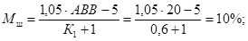
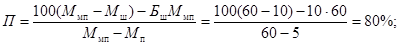
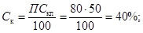
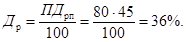
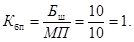
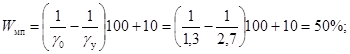

МИНИСТЕРСТВО СТРОИТЕЛЬСТВА И ЭКСПЛУАТАЦИИ
АВТОМОБИЛЬНЫХ ДОРОГ РСФСР
Утверждено
Министерством строительства
и эксплуатации автомобильных
дорог РСФСР
8 июля 1976 г.
ТЕХНИЧЕСКИЕ УКАЗАНИЯ
ПО ПРИМЕНЕНИЮ БИТУМНЫХ ШЛАМОВ
ДЛЯ УСТРОЙСТВА ЗАЩИТНЫХ СЛОЕВ
НА АВТОМОБИЛЬНЫХ ДОРОГАХ
ВСН 27-76
Минавтодор РСФСР
МОСКВА «ТРАНСПОРТ» 1977
Технические указания по применению битумных шламов для устройства защитных слоев на автомобильных дорогах. ВСН 27-76. Министерство строительства и эксплуатации автомобильных дорог РСФСР. М., «Транспорт», 1977.
В настоящих Технических указаниях рассмотрены вопросы проектирования, приготовления, применения и оценки качества пастовых и анионных битумных шламов. Катионные шламы в настоящем документе не рассматриваются.
Битумные шламы являются разновидностью эмульсионно-минеральных смесей, отличающихся жидкой консистенцией, благодаря которой они легко распределяются тонким слоем по поверхности покрытия и могут частично или полностью проникать в его поры. Это позволяет применять их для устройства практически водонепроницаемых и достаточно износостойких защитных слоев на проезжей части и обочинах автомобильных дорог. При необходимости защитным слоям из битумных шламов может быть придана требуемая шероховатость.
Технические указания разработаны в Гипродорнии взамен «Временных технических указаний по применению дорожных литых эмульсионно-минеральных смесей (битумных шламов) для устройства защитных слоев при строительстве и ремонте автомобильных дорог» ВСН 14-73 на основе исследований, проведенных Гипродорнии и его филиалами в 1973 - 1975 гг., а также обобщения отечественного и зарубежного опыта применения битумных шламов.
Технические указания составлены канд. техн. наук Г.С. Бахрахом (научный руководитель работы) и инж. Л.Г. Паниной (ответственный исполнитель). В написании отдельных разделов принимали участие: канд. техн. наук Л.А. Горелышева (п. 3, 4.2) и п. 1, 2 приложения 1; инж. Н.А. Вайнберг, канд. техн. наук В.П. Сорока и инж. В.П. Гомонов (приложение 5); канд. техн. наук Т.Г. Ямпольская (приложение 7); инж. Б.Н. Уткин (п. 7).
В проведении исследований и обобщении имеющегося опыта, результаты которых нашли отражение в настоящем документе, принимали участие: Г.С. Бахрах, Л.Г. Панина, Л.А. Горелышева, Л.В. Гладкова, В.П. Гомонов, В.М. Карамышева и С.М. Акиншин (Гипродорнии), П.П. Давыдова и Б.Д. Волкова (Ростовский филиал Гипродорнии), В.П. Леонтьев в Н.Г. Ехлакова (Свердловский филиал Гипродорнии).
Большую помощь в обобщении опыта дорожных подразделений Главдорюга оказал инж. В.А. Раков. При составлении указаний учтены опыт и замечания производственных Главков Минавтодора РСФСР и его подразделений: Ставропольавтодора, Волгоградавтодора, Краснодаравтодора, Белгородавтодора, Астраханьавтодора, Челябинскавтодора, Омскавтодора, Курганавтодора, Кемеровавтодора, Свердловскавтодора, а также Росдороргтехстроя.
Научный консультант работы д-р техн. наук проф. И.М. Руденская.
Общее редактирование выполнено канд. техн. наук А.В. Михайловым.
Ил. 22, табл. 23.
|
Министерство строительства и эксплуатации автомобильных дорог РСФСР |
Ведомственные строительные нормы Технические указания по применению битумных шламов для устройства защитных слоев на автомобильных дорогах |
ВСН 27-76 Взамен «Временных технических указаний по применению дорожных литых эмульсионно-минеральных смесей (битумных шламов) для устройства защитных слоев при строительстве и ремонте автомобильных дорог» |
Настоящие Технические указания распространяются на производство работ по устройству защитных слоев на автомобильных дорогах с применением пастовых и анионных битумных шламов.
1.1. Классификация
1.1.1. Битумным шламом называют эмульсионно-минеральную смесь литой консистенции, состоящую из песка, минерального порошка, эмульгатора, воды и дисперсного битума.
1.1.2. По виду применяемого эмульгатора различают пастовые, анионные и катионные шламы. Пастовые шламы содержат битумную пасту, образованную диспергированным в воде битумом и твердым эмульгатором. Анионные шламы содержат битумную эмульсию, образованную диспергированным в воде битумом и анионактивным эмульгатором. Катионные шламы содержат битумную эмульсию, образованную диспергированным в воде битумом и катионактивным эмульгатором.
1.1.3. По скорости распада эмульсий в смесях их подразделяют на медленно-, средне- и быстрораспадающиеся. К медленнораспадающимся относятся анионные шламы, в которых эмульсия распадается не ранее чем через 2 ч. К среднераспадающимся относятся анионные шламы, в которых эмульсия распадается через 1 - 2 ч. К быстрораспадающимся относятся катионные и анионные шламы, в которых эмульсия распадается не позднее, чем через 30 мин.
|
Внесены Государственным дорожным проектно-изыскательским и научно-исследовательским институтом (Гипродорнии) |
Утверждены Министерством строительства и эксплуатации автомобильных дорог РСФСР 8 июля 1976 г. |
Срок введения |
1.1.4. По скорости возвращения битуму клеющих свойств смеси подразделяются на быстро- и медленнотвердеющие. К быстротвердеющим, которые затвердевают сразу после распада эмульсии, относятся катионные шламы. К медленнотвердеющим, которые затвердевают по мере испарения воды, относятся пастовые и анионные шламы.
1.1.5. По виду и содержанию зерен крупнее 1,25 мм в % по массе в 100 % минеральной части смеси подразделяют на типы А, Б, В и Г. Тип А - песчаная крупнозернистая, содержащая дробленый песок или его смесь с природным, в том числе зерна крупнее 1,25 мм - не менее 40 %. Тип Б - песчаная крупно- и среднезернистая, содержащая природный песок, в том числе зерна крупнее 1,25 мм - 20 - 39 %. Тип В - песчаная мелкозернистая, содержащая природный песок, в том числе зерна крупнее 1,25 мм - менее 20 %. Тип Г - мастичная, не содержащая песка.
1.1.6. По структуре высохшего неуплотненного материала смеси подразделяют на малопористые (М), среднепористые (С) и пористые (П). К малопористым относятся смеси, образующие материал с остаточной пористостью менее 20 %. К среднепористым относятся смеси, образующие материал с остаточной пористостью от 20 до 25 %. К пористым относятся смеси, образующие материал с остаточной пористостью более 25 %.
1.1.7. По технологии приготовления различают смеси, получаемые одностадийным и двустадийным способом. По одностадийному способу получают пастовые шламы путем интенсивного принудительного перемешивания одновременно всех компонентов смеси, включая битум, в мешалках циклического действия со скоростью вращения лопастей более 60 об/мин, минуя стадию приготовления пасты.
По двустадийному способу получения пастовых шламов вначале готовят пасту в мешалках циклического действия со скоростью вращения лопастей более 30 об/мин, а затем шлам в тех же мешалках или в мешалках с принудительным или свободным перемешиванием со скоростью вращения лопастей или барабана не менее 20 об/мин.
При двустадийном совмещенном способе пасту и шлам готовят последовательно в одной и той же мешалке. При двустадийном раздельном способе пасту и шлам готовят в разных мешалках или в одной и той же мешалке, но с перегрузкой пасты в промежуточную емкость. Анионные шламы готовят по двустадийному раздельному способу. Вначале готовят эмульсию на специальных базах или в специальных цехах, а затем - шлам по двустадийному способу.
1.2. Область и условия применения битумных шламов
1.2.1. Битумные шламы применяют для устройства защитных слоев: замыкающих, заполняющих и закупорочных на автомобильных дорогах, не требующих усиления проезжей части.
1.2.2. Замыкающие слои (слои износа) толщиной 3 - 8 мм (в уплотненном состоянии) устраивают путем укладки жидкой смеси на обрабатываемую поверхность покрытий дорог с интенсивностью движения не более 3000 авт./сут (рис. 1, а). Замыкающие слои предусматривают на покрытиях с закрытой поверхностью (асфальто- и цементобетонных, черно- и белощебеночных) с целью: возобновления изношенной части старых покрытий; предотвращения проникания атмосферной влаги в обрабатываемое покрытие (с повышенной против допустимой пористостью); ликвидации повреждений в виде выкрашивания как отдельных щебенок, так и растворной части; повышения сцепных свойств обрабатываемого покрытия; улучшения эстетического вида покрытия.
1.2.3. Если требуется возобновить изношенную часть старого покрытия более чем на 8 мм, то обработку выполняют в два или несколько слоев (рис. 1, б).
1.2.4. Заполняющие слои износа устраивают путем укладки жидкой смеси вровень с обрабатываемой поверхностью покрытий дорог с любой интенсивностью движения (рис. 1, а). При этом смесь заполняет имеющиеся на поверхности углубления и крупные поры.
Заполняющие слои (рис. 1, в, д, з) предусматривают на покрытиях с открытой поверхностью и замкнутыми порами (на поверхностной обработке с применением горячего битума или эмульсии и щебня, на асфальто- и цементобетонных покрытиях с шелушащейся поверхностью и др.) с целью: увеличения износостойкости; закрепления щебенок в поверхностном слое; возобновления растворной части; возобновления или увеличения первоначальных сцепных свойств.
Рис. 1. Типы защитных слоев из битумных шламов:
а, б - одно- и двухслойные замыкающие слои (износа); в - заполняющий слой (износа); г - закупорочный слой; д - з - комбинированные слои;
1 - замыкающий слой толщиной 3 - 8 мм; 2 - обрабатываемое покрытие с закрытой поверхностью; 3 - заполняющий или закупорочный слой; 4 - обрабатываемое покрытие с открытой поверхностью и замкнутыми порами; 5 - обрабатываемое покрытие с открытой поверхностью и сквозными порами; 6 - поверхностная обработка с применением горячего битума или эмульсии и щебня; 7 - черный и белый щебень, втапливаемый в замыкающий слой
1.2.5. Закупорочные (водоупорные) слои (рис. 1, г) предусматривают на покрытиях и обочинах с открытой поверхностью и со сквозными порами (черно- или белощебеночных, черно- или белогравийных и др.) с целью: предотвращения проникания атмосферной влаги в обрабатываемое покрытие; закрепления щебенок в поверхностном слое.
1.2.6. В зависимости от назначения поверхностной обработки и состояния обрабатываемой поверхности наряду с одиночными защитными слоями устраивают комбинированные слои.
1.2.6.1. Комбинированные слои, сочетающие заполняющий или закупорочный слой и замыкающий слой (рис. 1, д), предусматривают на дорогах с интенсивностью движения не более 3000 авт./сут, когда наряду с необходимостью проведения одного или нескольких мероприятий по п. 1.2.4 требуется также возобновить изношенную часть старого покрытия или улучшить его эстетический вид.
1.2.6.2. Комбинированные слои, сочетающие поверхностную обработку (с применением горячего битума или эмульсии и щебня) и заполняющий слой (рис. 1, е) или сочетающие замыкающий слой и втапливаемый в него черный или белый щебень (рис. 1, ж), предусматривают с теми же целями, что и замыкающие слои по п. 1.2.2, но на дорогах с интенсивностью движения более 3000 авт./сут и при более высоких требованиях к сцепным свойствам покрытия (коэффициент сцепления j > 50).
1.2.6.3. Комбинированные слои, сочетающие заполняющий или закупорочный слой, замыкающий слой и втапливаемый в него черный или белый щебень (рис. 1, з), предусматривают в тех же случаях, что и комбинированные слои по п. 1.2.6.1, но на дорогах с интенсивностью движения более 3000 авт./сут и при более высоких требованиях к сцепным свойствам покрытия (j > 50).
Последние два типа комбинированных слоев устраивают: тип 1.2.6.2 (рис. 1, е) вместо замыкающих слоев по п. 1.2.2 и тип 1.2.6.3 вместо комбинированных слоев по п. 1.2.6.1, когда из-за недостатка или отсутствия дробленого песка не удается достичь требуемых сцепных свойств покрытия.
1.2.7. При наличии повреждений, связанных с потерей прочности дорожной одежды (трещины, просадки и др.), устройство защитных слоев может замедлить, но не предотвратить дальнейшее ее разрушение.
1.2.8. Замыкающие слои из битумных шламов повторяют все неровности обрабатываемого покрытия и потому не применяются в качестве выравнивающих слоев.
1.2.9. Тип защитного слоя и смеси для его устройства в зависимости от вида и состояния обрабатываемого покрытия с учетом интенсивности и условий движения рекомендуется выбирать в соответствии с табл. 1.
Таблица 1
Рекомендуемые типы защитных слоев и смесей для их устройства с учетом характеристики обрабатываемого покрытия, интенсивности и условий движения
|
Рекомендуемый тип защитного слоя по рис. 1 |
Рекомендуемые типы смесей при интенсивности движения, авт./cут |
|||||||
|
Вид и состояние |
Условия движения |
Значения j |
||||||
|
до обработки |
требуемые |
более 3000 |
более 1000 - 3000 |
200 - 1000 |
менее 200 |
|||
|
Покрытия с закрытой поверхностью по п. 1.2.2. |
Легкие |
Любые |
0,45 |
Замыкающий (износа) (рис. 1, а) |
А-С |
А-М |
А-М |
|
|
Затрудненные |
² |
0,50 |
То же |
- |
А-П |
А-С |
А-М |
|
|
Опасные |
² |
0,60 |
Комбинированный (рис. 1, е или 1, ж*) |
А-П |
А-С; Б-П |
Б-С; В-С |
Б-М; В-М |
|
|
То же (изношенное более чем на 8 мм) |
Легкие |
² |
0,45 |
Замыкающий (износа) (рис. 1, б) |
- |
А-С |
А-М |
А-М |
|
Б-С; В-П |
Б-М; В-С |
Б-М; В-М |
||||||
|
Затрудненные |
² |
0,50 |
То же |
- |
А-П |
А-С |
А-М |
|
|
Б-С; В-П |
Б-М; В-С |
Б-М; В-М |
||||||
|
Опасные |
² |
0,60 |
Комбинированный (рис. 1, е или 1, ж*) |
А-П |
А-С; Б-П |
Б-С; В-С |
Б-М; В-М |
|
|
Покрытия с открытой поверхностью и замкнутыми порами по п. 1.2.4. |
Легкие |
0,45 и менее |
0,45 |
Заполняющий (рис. 1, в) |
А-П |
А-С |
А-М |
А-М |
|
² |
Более 0,45 - 0,50 |
0,45 |
Б-П; В-П |
Б-С; В-С |
Б-М; В-М |
Б-М; В-М |
||
|
Затрудненные |
² |
0,50 |
А-П |
А-С |
А-М |
А-М |
||
|
Легкие |
Более 0,50 |
0,45 |
В-П |
В-С |
В-М |
В-М; Г |
||
|
Затрудненные |
² |
0,50 |
Б-П |
Б-С |
Б-М |
Б-М; Г |
||
|
Опасные |
0,60 и более |
0,60 |
А-П |
А-С |
А-М |
А-М; Г |
||
|
То же (изношено более чем на 8 мм) |
Легкие |
Любые |
0,45 |
Комбинированный (рис. 1, д) |
- |
А-С |
А-М |
А-М |
|
Б-С; В-С |
Б-М; В-М |
Б-М; В-М |
||||||
|
Затрудненные |
² |
0,50 |
- |
А-П |
А-С |
А-М |
||
|
Б-С; В-С |
Б-С; В-С |
Б-М; В-М |
||||||
|
Опасные |
² |
0,60 |
Комбинированный (рис. 1, з) |
- |
А-С; Б-П |
Б-С; В-С |
Б-М; В-М |
|
|
Б-С; В-С |
Б-М; В-М |
Б-М; В-М |
||||||
|
Покрытия и обочины с открытой поверхностью и сквозными порами по п. 1.2.5. |
При любых условиях |
² |
Тот же, что и до обработки |
Закупорочный (рис. 1, г) |
Б-М; В-М и Г независимо от интенсивности движения |
|||
* При интенсивности движения менее 3000 авт./сут.
Примечания. 1. Условия движения и значения коэффициентов сцепления шин автомобилей с увлажненной поверхностью покрытия при скорости 60 км/ч (j) приняты в соответствии со СНиП II-Д.5-72 (табл. 27).
2. А, Б, В, Г - типы смесей по п. 1.1.5, а М, С, П - соответственно малопористые, среднепористые и пористые смеси по п. 1.1.6.
3. В числителе приведены типы смесей для верхнего, а в знаменателе - для нижнего слоев двухслойных обработок по п. 1.2.3 и 1.2.6.
Учитывая необходимость получения близких по значению показателей физико-механических свойств материала для замыкающих и заполняющих слоев покрытий, подверженных различной степени уплотнения, тип смеси назначают в зависимости от интенсивности движения:
Интенсивность движения, авт./сут............ > 1000 - 3000 200 - 1000 < 200
Тип смеси..................................................... П или С С или М М
Смеси типа П для интенсивности движения 1000 - 3000 авт./сут и типа С для интенсивности 200 - 1000 авт./сут позволяют получить более высокий коэффициент сцепления колеса с покрытием, чем смеси типов С и М соответственно.
1.2.10. Защитные слои с применением битумных шламов устраивают на покрытиях и обочинах дорог во II - V дорожно-климатических зонах (по СНиП II-Д.5-72) при благоприятных погодных условиях в период формирования слоя (отсутствие дождей, средняя температура воздуха не ниже +10 °С).
1.2.11. При устройстве защитных слоев на обочинах необходимо наносить краевую линию в соответствии с «Указаниями по разметке автомобильных дорог» (ВСН 23-75) Минавтодора РСФСР.
2.1. Показатели свойств битумных шламов, предназначенных для устройства замыкающих и заполняющих слоев, должны удовлетворять требованиям, указанным в табл. 2, за исключением п. 2.2 этой таблицы.
2.2. Показатели свойств битумных шламов, предназначенных для устройства закупорочных или нижних слоев двухслойных или комбинированных обработок, должны удовлетворять только пп. 1.1; 1.2; 2.1; 2.2 и 2.3 требований табл. 2.
3.1. Битумы и разжижители
3.1.1. Для приготовления битумных шламов применяют нефтяные дорожные вязкие битумы по ГОСТ 22245-76 марок БНД-60/90, БНД-90/130 и БНД-130/200 во II и III дорожно-климатических зонах и марок БНД-40/60, БНД-60/90 и БНД-90/130 в IV и V дорожно-климатических зонах (см. п. 1 приложения 3).
Таблица 2
Требования к битумным шламам
|
№ п/п |
Показатели свойств |
Значения показателей |
Методы испытаний смесей по приложению |
|
1 |
2 |
3 |
4 |
|
1. Требования к битумным шламам в жидком состоянии |
|||
|
1.1 |
Консистенция смеси по растеканию Кр*, см. для смесей типов: |
п. 2 |
|
|
А, Б |
10 - 16 |
||
|
В, Г |
14 - 18 |
||
|
1.2 |
Расслаивание Рр, % по массе, не более, для смесей типов: |
п. 2 |
|
|
А, Б |
10 |
||
|
В, Г |
5 |
||
|
2. Требования к битумным шламам в твердом сформировавшемся состоянии |
|||
|
2.1 |
Водонасыщение образцов-таблеток под вакуумом W, % объема, не более, для смесей типов: |
п. 7 |
|
|
А |
4 |
||
|
Б, В, Г |
3 |
||
|
Коэффициент водопроницаемости образцов-таблеток Кп, см/с, но более, для смесей типов: |
п. 8 |
||
|
А, Б |
5 × 10-8 |
||
|
В |
1 × 10-8 |
||
|
Г |
0,2 × 10-8 |
||
|
2.3 |
Набухание вакуумированных образцов-таблеток Н после 15 сут. выдерживания их в воде, % по объему не более |
1,5 |
п. 9 |
|
Износ водонасыщенных под вакуумом образцов-балочек Ив, г/см2, не более для дорог с интенсивностью движения авт./сут: |
|||
|
более 2000 |
0,20 |
п. 10 |
|
|
1000 - 2000 |
0,30 |
||
|
менее 1000 |
0,40 |
||
|
2.5 |
Коэффициент длительной водоустойчивости по износу тонкослойных образцов-балочек Кдви= Ив : Идв, не менее, для смесей типов: |
п. 11 |
|
|
А, Б |
0,75 |
||
|
В, Г |
0,80 |
||
|
2.6 |
Коэффициент сцепления колеса с мокрым покрытием j, для смесей типа А |
См. табл. 1, примечание 1 |
п. 12 |
|
2.7 |
То же, после испытания балочек на износ по п. 2.4 настоящей табл., не менее |
j - 0,05 |
п. 12 |
|
2.8 |
Глубина шероховатости h, мм, для смесей типа А, не менее |
0,5 |
п. 15 |
* При устройстве замыкающих слоев принимаются значения, близкие к нижнему, а при устройстве закупорочных слоев - близкие к верхнему пределу показателей свойств.
3.1.2. Разрешается применять нефтяные строительные битумы по ГОСТ 6617-56 при условии разжижения их до марок, указанных в п. 3.1.1.
3.1.3. Для нефтяных, дорожных и строительных битумов в качестве разжижителей применяют жидкие битумы по ГОСТ 11955-74 (см. п. 2 приложения 3), каменноугольное масло по ГОСТ 2770-59 (см. п. 3 приложения 3), мазуты по ГОСТ 10565-75, каменноугольные дегти по ГОСТ 4641-74 (см. п. 4 приложения 3), вяжущие нефтяные по ТУ 38001200-74 Миннефтехимпрома СССР (см. п. 5 приложения 3) и гудроны, отвечающие техническим требованиям Гипродорнии [«Технические указания по применению нефтяных гудронов (остаточных битумов) в дорожном строительстве», Гипродорнии, Минавтодор РСФСР, Москва, 1975], моторное топливо по ГОСТ 1667-68, экстракты селективной очистки масел.
Ориентировочное количество разжижителя для получения битума заданной вязкости приведено в п. 6 приложения 3.
3.2. Песок
3.2.1. Для приготовления битумных шламов применяют природные или дробленые пески, фракционированные или нефракционированные, отвечающие требованиям ГОСТ 8736-67.
3.2.2. Дробленый песок получают из изверженных, метаморфических и осадочных некарбонатных горных пород не ниже марки «800» по ГОСТ 8267-75 или из гравия с показателем дробимости не выше Др-8 по ГОСТ 8268-74.
Содержание в песке зерен крупнее 1,25 мм должно быть не менее 50 % по массе. Наличие в песке зерен крупнее 10 мм не должно превышать 0,5 % по массе, а зерен размером от 5 до 10 мм - 5 % по массе.
3.2.3. При устройстве слоев износа на дорогах с интенсивностью движения более 2000 авт./сут следует применять дробленые пески, полученные из изверженных, метаморфических и осадочных некарбонатных горных пород не ниже марки «1000», а также из гравия с показателем дробимости не выше Др-8.
3.2.4. Если в состав битумного шлама входит известь, то количество пылевидных, глинистых и илистых частиц в песке, определяемых отмучиванием, не должно превышать 5 % по массе, в том числе содержание глины не более 1,5 % по массе.
3.3. Минеральный порошок
3.3.1. Минеральные порошки, применяемые в качестве заполнителя, должны отвечать требованиям ГОСТ 16557-71 (см. п. 7 приложения 3).
Применение активированных минеральных порошков не допускается.
3.3.2. В случае применения порошкообразных отходов промышленности они должны отвечать требованиям табл. 15 ГОСТ 9128-76 (см. п. 8 приложения 3).
3.4. Эмульгаторы. Поверхностно-активные вещества (ПАВ) и другие добавки
3.4.1. Минеральные порошки, применяемые в качестве эмульгаторов для паст, делят на собственно эмульгаторы и порошки-носители.
3.4.2. К собственно эмульгаторам относят порошки, проходящие через сито 1,25 мм (100 %), имеющие активность не менее 10 мг CaO + MgO на 1 мл водной вытяжки эмульгатора, что составляет 20 % по массе CaO + MgO в пересчете на сухое вещество. Указанным требованиям могут отвечать такие порошки, как известь молотая негашеная, известь-пушонка, фильтрпрессная грязь (свежая), некоторые известняковые минеральные порошки и порошкообразные отходы промышленности и др.
3.4.3. Активность порошка определяют методом титрования его водной вытяжки соляной кислотой (по п. 1.2 - 1.4 приложения 1).
3.4.4. К порошкам-носителям относят порошки, содержащие не менее 60 % по массе частиц мельче 0,071 мм, имеющие активность менее 10 мг/мл. Указанным требованиям могут отвечать известняковые порошки, известь-пушонка ниже II сорта, фильтрпрессная грязь лежалая, порошки асбестового происхождения, порошкообразные отходы промышленности, отходы от дробления некарбонатных пород, золы уноса ТЭС и др.
3.4.5. Порошки-носители могут применяться в качестве эмульгатора для паст, как правило, в присутствии активаторов.
3.4.6. К активаторам относят вещества, повышающие активность порошка-носителя. В качестве активаторов могут применяться собственно эмульгаторы по п. 3.4.2 и некоторые ПАВ как анионного, так и катионного типа, указанные в ВСН 59-68 Минтрансстроя СССР.
3.4.7. При применении в качестве активатора собственно эмульгатора его минимальное содержание в смеси с порошком-носителем должно обеспечить требования, предъявляемые к собственно эмульгаторам (см. п. 3.4.2). Пригодность того или иного ПАВ в качестве активатора проверяют экспериментально при приготовлении паст или смесей (см. п. 1 приложения 2).
3.4.8. Наряду с применением ПАВ в качестве активаторов по п. 3.4.6 их назначают: для повышения дисперсности битума в пастах или смесях; для улучшения при необходимости сцепления битума с поверхностью минерального материала; для сокращения времени высыхания и формирования защитного слоя; для уменьшения расхода порошкообразных эмульгаторов.
3.4.9. Выбор ПАВ и его расход определяются назначением добавки, свойствами применяемого битума и минеральных материалов, а также способом и временем производства работ. Эффективность добавки в каждом конкретном случае проверяется экспериментально по свойствам смесей.
3.4.10. Если в пастовых шламах эмульгаторы по п. 3.4.2 не обеспечивают необходимого сцепления битума с поверхностью минерального материала (низкие показатели водоустойчивости по табл. 2), то добавляются активаторы с активностью более высокой, чем у используемых в данной смеси, или ПАВ, или сочетание указанных активаторов с ПАВ.
3.4.11. В анионные шламы для обеспечения необходимого сцепления битума с поверхностью минеральных материалов следует вводить активаторы, являющиеся одновременно собственно эмульгаторами для пастовых шламов по п. 3.4.2.
3.4.12. Увеличение подвижности смесей и сокращение времени их высыхания одновременно с улучшением отдельных физико-механических свойств достигаются путем введения добавок гидравлических вяжущих (извести гидравлической по ГОСТ 9179-70, портландцемента по ГОСТ 10178-62, сланцевой золы и т.д.). Во избежание получения скользкого покрытия количество добавок в составе сухой смеси не должно превышать 2 % по массе.
3.5. Вода
3.5.1. Для приготовления битумных шламов применяют питьевую воду любой жесткости.
3.5.2. Не допускается применять сточные, болотные и соленые (морские) воды.
3.6. Паста
3.6.1. При приготовлении смесей по двустадийному способу паста должна отвечать требованиям, приведенным в табл. 3.
Требования к битумным пастам
|
Значение показателей |
Методы испытаний по приложению 1 |
|
|
Неоднородность Нп, % по массе, не более |
5 |
|
|
Консистенция смеси по растеканию Кр, см, не более |
14 |
|
|
Расслаиваемость Рр, % по массе, не более |
3 |
|
|
Коэффициент устойчивости при хранении Ку, не более |
2 |
3.7. Эмульсия
3.7.1. Для приготовления анионных медленно- и среднераспадающихся шламов рекомендуется применять дорожные медленнораспадающиеся эмульсии прямого типа, отвечающие требованиям ГОСТ 18659-73 (см. п. 9 приложения 3), ВСН 25-63 Минавтошосдора РСФСР и ВСН 140-68 Минтрансстроя СССР.
3.7.2. Допускается применение также быстро- и среднераспадающихся эмульсий при условии введения стабилизаторов (например, триполифосфата натрия, жидкого стекла и др.) в количестве 1,5 - 2 % по отношению к массе эмульсии. В этом случае необходимо тщательно проверять свойства получаемых смесей, особенно их водоустойчивость.
При введении стабилизаторов необходимо следить, чтобы распад эмульсии на портландцементе был не менее 10 мин.
3.7.3. Наряду с требованиями, изложенными в п. 9 приложения 3, необходимо определять скорость распада эмульсии в шламах (по п. 3.2 - 3.6 приложения 1).
4.1. Выбор материалов для приготовления смесей
4.1.1. Для приготовления смесей выбирают компоненты в соответствии с типом смеси и имеющимися в наличии материалами с учетом требований к ним по п. 3.
4.1.2. При проектировании смесей типа А содержание частиц крупнее 1,25 мм рекомендуется принимать не менее 40 % по массе (в том числе дробленых зерен не менее 30 %) в 100 % сухой смеси1 (включая битум).
1 В дальнейшем под cyxoй смесью подразумевается смесь минерального материала и битума без воды.
4.1.3. При проектировании смесей типа Б содержание частиц крупнее 1,25 мм рекомендуется принимать не менее 20 % по массе в 100 % сухой смеси.
4.2. Расчет количественного соотношения компонентов смеси
Сухая смесь
4.2.1. Для выбранного типа смеси по табл. 4 назначают: коэффициент содержания битума К1, представляющий собой отношение количества битума (% по массе), приходящегося на частицы мельче 0,071 мм к количеству этих же частиц в 100 % сухой смеси, количество асфальтового вяжущего вещества ABB (% по массе), представляющего собой смесь битума и частиц мельче 0,071 мм в 100 % сухой смеси.
Таблица 4
Ориентировочные данные для расчета состава битумных шламов
|
Тип смеси по виду и содержанию зерен крупнее 1,25 мм |
Тип смеси по структуре в высохшем неуплотненном состоянии |
|||
|
Пористые (П) |
Среднепористые (С) |
Малопористые (М) |
||
|
Коэффициент содержания битума К1 |
Все типы |
0,4 - 0,6 |
0,6 - 0,8 |
0,8 - 1,0 |
|
Содержание ABB в 100 % сухой смеси, % по массе |
А |
15 - 20 |
20 - 25 |
25 - 30 |
|
Б |
25 - 30 |
30 - 35 |
35 - 40 |
|
|
В |
35 - 40 |
40 - 50 |
50 - 60 |
|
|
Г |
- |
- |
60 - 100 |
|
Примечание. При применении малопористых смесей для устройства закупорочных слоев значение K1 следует увеличить на 50 % и содержание ABB на 30 % по отношению к рекомендуемому.
Первоначально назначают минимальное из указанных в табл. 4 значений ABB и три значения К1, включая минимальное и максимальное.
4.2.2. Рассчитывают содержание частиц мельче 0,071 мм Мш и битума Бш (в % по массе) в 100 % сухой смеси для трех составов с разным К1 по формулам1
1 При выводе этих формул считали, что содержание битума в шламе Бш слагается из части битума, приходящегося на зерна мельче 0,071 мм Мш, и части, приходящейся на зерна песка (крупнее 0,071 мм), принимаемой равной 0,05П или 0,05 (100 - ABB), где П - содержание песка (в % по массе).
4.2.3. Рассчитывают содержание песка (в % по массе) в 100 % сухой смеси по формуле
где Ммп и Мп - содержание частиц мельче 0,071 мм в 100 % соответственно минерального порошка и песка, % по массе.
Если П + Бш превышает 90 %, т.е. на долю минерального порошка и эмульгатора остается менее 4 %, то песок из-за высокого содержания в нем зерен мельче 0,071 мм не пригоден для приготовления шлама.
4.2.4. Рассчитывают содержание минерального порошка МП (в % по массе) в 100 % сухой смеси по формуле
4.2.5. Рассчитывают для смеси типа А и Б содержание частиц крупнее 1,25 мм Ск (в % по массе) в 100 % сухой смеси по формуле
где Скп - содержание частиц крупнее 1,25 мм в 100 % песка, % по массе.
4.2.6. Рассчитывают для типа А содержание дробленых зерен крупнее 1,25 мм Др (в % по массе) в 100 % сухой смеси по формуле
где Дрп - содержание дробленых зерен крупнее 1,25 мм в песке, % по массе.
4.2.7. При несоответствии содержания Ск и Др требованиям п. 4.1.2 и 4.1.3 корректируют состав за счет применения песка с большим содержанием зерен крупнее 1,25 мм и дробленых зерен.
4.2.8. При приготовлении пастовых шламов по одностадийному или двустадийному совмещенному способу рассчитывают коэффициент содержания битума в пасте Кбп для запроектированной смеси по формуле
и сравнивают полученное значение со значением Кбп для применяемого минерального порошка (эмульгатора) по табл. 5.
Если значение Кбп запроектированной смеси превышает минимальное значение по табл. 5, то приготавливают опытные образцы пасты с полученным значением Кбп для проверки возможности применения порошка данного вида в качестве эмульгатора.
4.2.9. Если по п. 4.2.8 при экспериментальном приготовлении пасты произошло расслоение компонентов, необходимо повысить активность порошка путем замены части его активатором по п. 3.4.6 или увеличения содержания активатора в порошках, составленных из порошков-носителей (или порошков эмульгаторов) и активаторов.
Таблица 5
Ориентировочные пределы значений коэффициентов концентрации вяжущего и воды в пасте
|
Коэффициенты содержания в пасте |
||
|
вяжущего Кбп |
воды Квп |
|
|
Известь воздушная негашеная молотая |
4 - 7 |
2 - 5 |
|
» » гашеная |
2 - 3 |
1 - 2 |
|
Фильтрпрессная грязь (свежая) |
2 - 3 |
1 - 2 |
|
Пыль уноса цементных заводов |
1 - 2 |
1 - 1,5 |
|
Известняковые минеральные порошки |
1 - 1,5 |
0,8 - 1,2 |
|
Асбест 7-го сорта (ГОСТ 12871-67) или асбоотходы |
1 - 3 |
2 - 4 |
|
Порошки-носители (по п. 3.4.4) с добавкой активаторов (по п. 3.4.6) |
1 - 4 |
2 - 3 |
|
То же, асбестового происхождения с добавкой активаторов |
1 - 3 |
3 - 5 |
|
Порошки-эмульгаторы с добавкой активаторов |
2 - 5 |
2 - 4 |
Количество порошка-активатора МПа, добавляемого вместо минерального порошка-носителя (в % по массе) в 100 % сухой смеси, рассчитывают по эмпирической формуле
где Ммп и Мп - содержание частиц мельче 0,071 мм в 100 % соответственно минерального порошка (носителя) и порошка-активатора, % по массе;
Аа и Амп - активность соответственно минерального порошка и порошка активатора, мг/мл определяют по п. 1.2 - 1.4 приложения 1.
Оставшуюся часть порошка-носителя МПп определяют как разницу между общим содержанием минерального порошка МП и содержанием порошка-активатора МПа.
Скорректированный состав сухой смеси
П + МПп + МПа + Бш = 100 %.
4.2.10. Если паста, приготовленная в соответствии со скорректированным составом, не получилась (произошло расслоение компонентов), то вновь увеличивают содержание порошка-активатора в смеси до полной замены им минерального порошка.
Жидкая смесь
4.2.11. Рассчитывают ориентировочное содержание воды в жидкой смеси Вш (в % по массе) сверх 100 % сухой смеси по формуле
где Wмп - полная влагоемкость минерального порошка в 100 % сухой смеси, % по массе, определяется по эмпирической формуле:
Wмп = (1/g0 - 1/gу)100 + 10, (10)
g0 и gу - соответственно насыпная объемная масса и плотность минерального порошка.
Полная влагоемкость минерального порошка обычно колеблется от 30 до 80 % по массе в 100 % увлажненного порошка. Значение Вш уточняют при приготовлении смеси, добиваясь требуемой по табл. 2 консистенции.
4.2.12. Рассчитывают состав жидкой смеси так, чтобы сумма всех компонентов составила 100 %, и получают новые значения содержания всех компонентов смеси, которые обозначены принятыми ранее буквами с индексами «1»:
Бш1 + МП1 + П1 + Вш1 = 100 % или с учетом п. 4.2.9,
Бш1 + МПм1 + МПа1 + П1 + Вш1 = 100 %.
Для приготовления смеси рассчитывают содержание смеси, идущей для образования теста перед введением битума.
4.2.13. При приготовлении смеси одностадийным способом содержание воды в тесте Вт (в % по массе) в 100 % жидкой смеси рассчитывают по формуле
где g0 и gу - соответственно насыпная объемная масса и плотность минеральной части смеси.
4.2.14. При приготовлении смеси двустадийным совмещенным способом содержание воды в тесте Вт (в % по массе) в 100 % жидкой смеси рассчитывают по формуле
где g0 и gу - соответственно насыпная объемная масса и плотность минерального порошка.
4.2.15. При приготовлении смеси двустадийным раздельным способом рассчитывают:
а) содержание компонентов пасты (минерального порошка МПп, битума Бп, воды Вп) по формулам:
где Квп - коэффициент общего содержания воды в пасте (принимают нижнее значение для данного минерального порошка по табл. 5);
б) содержание воды в тесте Вт в 100 % пасты по формуле (12) с учетом МП1 = МПп;
в) содержание пасты Пш (в % по массе) в 100 % жидкого шлама - по формуле
г) содержание воды пасты Впш в 100 % жидкой смеси и дополнительное количество воды Вшд по формулам:
4.2.16. Для сокращения трудоемкости лабораторных работ при приготовлении смеси двустадийным раздельным способом все три смеси по п. 4.2.1 приготавливают на пасте одного состава с максимальным из трех выбранных значений Кбп. При этом рассчитывают состав жидкого шлама на пасте с максимальным значением Кбп (см. п. 4.2.15), а для составов с другими значениями Кбп дополнительно определяют содержание (в % по массе) минерального порошка в пасте шлама МПпш и его добавку DМП в 100 % жидкого шлама по формулам:
Таким образом, первый состав шлама выражается формулой
Пш + П1 + Вшд = 100 %,
а два других состава - формулой
Пш + П1 + DМП + Вшд = 100 %,
причем в каждом составе значения Пш, П1 и Вшд разные.
4.2.17. Если при оценке показателей свойств образцов из запроектированных смесей оказалось, что коэффициент водоустойчивости не отвечает требованиям, приведенным в табл. 2, то в состав пасты вводят вместо части минерального порошка добавку активатора МПас, например извести пушонки в количестве 1 - 3 % по массе в 100 % сухой смеси.
Содержание активатора МПаш (в % по массе) в 100 % жидкого шлама определяют по формуле
Содержание активатора МПап в 100 % пасты определяют по формуле
Тогда состав пасты выражается формулой
МПп + МПап + Бп + Вп = 100 %.
4.2.18. В результате приведенных расчетов получают три состава смесей, отличающихся в сухом состоянии содержанием битума и минерального порошка при одинаковом содержании ABB.
В соответствии с этими составами готовят три смеси по п. 1 приложения 2.
4.2.19. Размеры образцов, их количество и способ изготовления (в зависимости от интенсивности движения) устанавливают по п. 3 приложения 2.
4.2.20. Показатели свойств изготовленных образцов определяют в соответствии с перечнем испытаний по табл. 1 приложения 2.
4.3. Выбор производственного состава
4.3.1. Для смесей, предназначенных для устройства замыкающих слоев и заполняющих слоев однослойных обработок, выбирают состав по трем показателям в твердом уплотненном состоянии: коэффициенту сцепления j, водонасыщению W и износу водонасыщенных под вакуумом образцов-балочек Ив.
Строят графики зависимости этих показателей от содержаний битума, принятых по трем составам сухой смеси.
Выбирают такой состав, который при требуемом значении j для назначенного по табл. 1 защитного слоя обеспечивает значение водонасыщения не ниже требуемого по табл. 2 и минимальный износ.
Показатели свойств для выбранного состава должны отвечать требованиям табл. 2.
4.3.2. Если для выбранного состава значение j отвечает требуемому для защитного слоя, назначенного по табл. 1, а значения одного или нескольких других параметров не отвечают требованиям табл. 2, то увеличивают содержание ABB в смеси на 2 - 5 % и вновь подбирают состав.
4.3.3. Если для выбранного состава значения набухания Н и коэффициента длительной водоустойчивости Кдви не соответствуют требованиям табл. 2, причем увеличение содержания ABB в смеси не дает желаемых результатов, необходимо ввести в смесь активатор по п. 3.4.6 для увеличения сцепления битума с минеральным материалом смеси.
4.3.4. Если для выбранного состава значение j не отвечает требуемому для защитного слоя, назначенному по табл. 1, уменьшают содержание ABB в смеси до предела, при котором остальные параметры отвечают требованиям табл. 2, или назначают комбинированные слои по п. 1.2.6.
4.3.5. Если состав предназначен для замыкающего слоя, укладываемого на покрытие с повышенной пористостью (см. п. 1.2.2), но значение Кп не соответствует, а остальные параметры соответствуют требованиям табл. 2, необходимо предусмотреть подгрунтовку обрабатываемого покрытия битумной пастой или эмульсией.
4.3.6. Для смесей, предназначенных для устройства закупорочных или нижних слоев двухслойных или комбинированных обработок, состав выбирают по двум показателям: водонасыщению W и объемной массе g0 в сформировавшемся состоянии.
Выбирают состав с максимальной объемной массой при значениях W и Кп, отвечающих требованиям табл. 2. Все остальные показатели свойств выбранного состава должны также отвечать требованиям табл. 2 с учетом п. 2.2.
В противном случае меняют содержание ABB или вводят активаторы.
4.3.7. Для выбранного по п. 4.3.1 или 4.3.6 состава уточняют опытным путем общее содержание воды в шламе, при котором консистенция смеси соответствует требуемой по табл. 2, и с учетом этого окончательно корректируют состав.
Пример расчета состава битумного шлама приведен в приложении 4.
5.1. Принципиальные технологические схемы организации производства работ
5.1.1. В зависимости от протяженности дорожной сети, требующей устройства защитных слоев из битумных шламов, среднего расстояния перевозки продукции (паст, эмульсий или шламов), наличия или возможности приобретения (изготовления) смесительных узлов, а также возможности получения готовой эмульсии, различают шесть принципиальных схем организации производства работ.
Перечень и описание оборудования и механизмов, необходимых для приготовления, транспортировки и укладки битумных шламов, приведены в приложении 5.
Схема 1 с использованием стационарного или инвентарного узла, включающего один смеситель принудительного или свободного перемешивания для приготовления битумных шламов
5.1.2. При наличии смесителя принудительного перемешивания в зависимости от скорости вращения лопастей пастовый шлам можно готовить одностадийным или двустадийным способом (см. п. 1.1.7). Возможность приготовления анионного шлама в данном случае не зависит от скорости вращения лопастей смесителя.
5.1.3. При наличии смесителя свободного перемешивания по этой схеме возможно приготовление только анионного шлама.
5.1.4. Наименее трудоемок одностадийный способ. Использование при этом смесителя асфальтобетонного завода Д-597А (см. п. 1.1 приложения 5) позволяет достичь производительности около 80 т смеси в смену, обеспечивая однослойную обработку за строительный сезон свыше 100 км дорожного покрытия. Аналогичный эффект дает применение глиномялки ГМЗ или бетонорастворосмесителя СБ-81 (п. 1.4 приложения 5).
5.1.5. Использование смесителя емкостью 500 л с малой скоростью вращения лопастей (менее 60 об/мин) при двустадийном совмещенном способе для пастовых шламов или двустадийном раздельном способе для анионных шламов позволяет достичь производительности около 25 и 80 т в смену соответственно.
5.1.6. Наиболее эффективно расположение смесительного узла на асфальтобетонном заводе, а при отсутствии такой возможности - на территории любых других производственных предприятий, что позволяет частично или полностью использовать существующие производственные мощности. В первом случае удается, как правило, также использовать склады битума, порошка и песка и оборудование для их подачи.
5.1.7. Эффективный радиус действия узла 20 - 30 км. Большая дальность возки нецелесообразна из-за увеличения числа транспортных средств для перевозки смеси.
Схема 2 с использованием стационарного или инвентарного узла, включающего две мешалки принудительного перемешивания или одну принудительного, а другую свободного перемешивания для приготовления пастовых шламов
5.1.8. В отличие от схемы 1 смесь готовят двустадийным раздельным способом (см. п. 1.1.7). Такая схема эффективна, когда скорость вращения лопастей, имеющихся в наличии смесителей, меньше 60 об/мин.
5.1.9. Учитывая, что с одной стороны, приготовление замеса пасты требует примерно в 2 раза больше времени, чем приготовление замеса шлама (для смесителей одинаковой емкости), а, с другой стороны, для приготовления замеса шлама требуется пасты в 2 - 3 раза меньше по объему, то для бесперебойной работы обоих смесителей емкость одного из них, в которой готовят пасту, должна быть в 2 - 2,5 раза меньше: например 250 и 500 л. Производительность в этом случае может быть достигнута около 80 т в смену.
5.1.10. Как и в схеме 1 эффективный радиус действия узла 20 - 30 км.
Схема 3 с использованием стационарного или инвентарного и передвижного узлов для приготовления пастовых шламов
5.1.11. Рассматриваемая схема отличается от схемы 2 тем, что передвижной узел приготовления смеси по мере передвижения фронта работ передислоцируют в новые пункты. Пасту транспортируют в пасторастворовозах ПС-402 (см. п. 2.3 приложения 5) от узла ее приготовления к передвижному узлу приготовления смеси. Песок подвозят от ближайшего карьера (или склада) к месту стоянки передвижного узла в процессе работ или заготавливают впрок на предполагаемых местах стоянки передвижного узла приготовления смеси.
5.1.12. В отличие от предыдущих схем рассматриваемая схема предполагает уменьшение числа транспортных средств при той же производительности. Она является более экономичной при радиусе действия узла приготовления паст свыше 20 - 30 км.
5.1.13. Применение в качестве смесительного оборудования на обоих узлах смесителя Д-597А позволяет достичь производительности около 150 т смеси в смену при производительности узла приготовления паст около 50 т в смену.
5.1.14. Применение оборудования СИ-206 и СИ-207 (см. п. 1.7 и 1.8 приложения 5) в наибольшей мере отвечает рассматриваемой схеме. На рис. 2 приведены различные этапы производства работ с применением узлов СИ-206 и СИ-207.
Рис. 2. Различные этапы производства работ по устройству защитного слоя из битумного шлама с применением узлов СИ-206 и CИ-207 в зависимости от удаленности места укладки смеси от АБЗ:
а - до 30 - 50 км; б - от 30 - 50 до 80 - 100 км; в - свыше 80 - 100 км;
1 - песчаный карьер; 2 - АБЗ; 3 - передвижной узел приготовления пасты СИ-207; 4 - самоходная транспортная тележка ПС-401М; 5 - пасторастворовоз ПС-402; 6 - покрытие, обработанное шламом; 7 - передвижной узел СИ-206 приготовления шлама на готовой пасте или эмульсии
При наличии АБЗ на его территории устанавливают узел приготовления пасты СИ-207, на котором можно сразу готовить шлам одностадийным способом. Узел приготовления смеси СИ-206 временно передают другому участку, где он может получать готовую пасту или эмульсию. В радиусе 1,5 - 2 км от АБЗ, где установлен узел СИ-207, смесь можно транспортировать самоходными транспортными тележками ПС-401М (см. п. 2.2 приложения 5), а на расстояние до 20 - 30 км - пасторастворовозами ПС-402 (рис. 2, а). После обработки покрытия в радиусе 20 - 30 км от АБЗ, где установлен узел СИ-207, узел СИ-206 передислоцируют в район действия этого АБЗ так, что он начинает работать в комплекте с узлом СИ-207, получая от него пасту (рис. 2, б). Через каждые 7 - 8 км обработанного покрытия узел СИ-207 перемещают вдоль фронта работ на новое место. Удаление узла СИ-206 от узла СИ-207 более чем на 70 - 80 км нецелесообразно из-за увеличения необходимого количества пасторастворовозов. В этом случае экономичнее передислоцировать узел СИ-207 на другой АБЗ, если этот АБЗ отстоит от первого не далее 140 - 160 км. В противном случае узел СИ-207 устанавливают автономно (рис. 2, в). При этом необходимо организовать доставку к нему битума, воды и минеральных компонентов.
5.1.15. Замена транспортных тележек ПС-401М пасторастворовозами ПС-402 или самосвалами с механическим побудителем ПС-404 (см. п. 2.4 приложения 5) позволяет снизить приведенные затраты. В этом случае узел СИ-206 перемещают вдоль фронта работ через каждые 21 - 23 км.
5.1.16. В п. 5.1.13 и 5.1.14 приведены ориентировочные значения минимального и максимального расстояния между узлами СИ-206 и СИ-207 и длин захваток. Точные их значения могут быть вычислены путем минимизации приведенных затрат методами дифференциального исчисления.
Схема 4 с использованием одного передвижного узла СИ-207 для приготовления битумных шламов
5.1.17. В схеме 4 узел СИ-207, устанавливаемый автономно, работает по одностадийному способу при приготовлении пастовых шламов и перемещается вдоль фронта работ через каждые 7 - 8 или 21 - 23 км при перевозке смеси транспортными тележками ПС-401М или пасторастворовозами ПС-402 и самосвалами ПС-404 соответственно. Недостатком схемы является необходимость доставки к узлу битума, воды и минеральных компонентов, а также организации их складирования на местах стоянок узла.
5.1.18. При поставке в район производства работ анионной эмульсии отпадает необходимость в битумном хозяйстве.
Схема 5 с использованием передвижной загрузочной базы и передвижного смесителя для приготовления битумных шламов
5.1.19. Отличительной особенностью схемы 5 является применение в качестве основного узла передвижного (самоходного) смесителя (см. п. 1.6 приложения 5), который загружается необходимыми компонентами на передвижной загрузочной базе (см. п. 1.5 приложения 5) и в процессе загрузки осуществляет приготовление смеси. После удаления фронта работ на определенное расстояние от загрузочной базы она перемешается на новое место стоянки.
5.1.20. Производительность работ зависит от числа самоходных смесителей и дальности возки смеси. Оптимальную длину захватки, обслуживаемую загрузочной базой с одного места стоянки, определяют экономическим расчетом в зависимости от типа и числа самоходных смесителей.
5.1.21. Пастовые шламы готовят в самоходном смесителе одностадийным способом (скорость вращения лопастей не менее 60 об/мин). На загрузочной базе в цистерну смесителя подают компоненты смеси, отдозированные на один замес.
5.1.22. Для приготовления анионных шламов в цистерну смесителя вместо битума вводят эмульсию. Скорость вращения лопастей смесителя должна быть не менее 20 об/мин.
Схема 6 с использованием самоходной машины для приготовления битумных шламов
5.1.23. Эта схема отличается от схемы 5 тем, что вместо самоходного смесителя, готовящего за один рейс один замес, используют самоходную машину грузоподъемностью 10 - 12 т, которая несет на себе запас исходных компонентов на несколько замесов. После выработки всего материала машина вновь загружается на загрузочной базе. Наибольшая эффективность может быть достигнута, если организовать заправку самоходной машины непосредственно на месте производства работ, чтобы исключить ее холостой пробег.
5.1.24. При выборе производительности базы приготовления битумных шламов и места ее размещения следует определить предполагаемый годовой объем работ с учетом протяженности покрытий, требующих обработки, частоты возобновления защитного слоя, обеспеченности материалами-компонентами смеси и расположения АБЗ или других производственных баз, обслуживающих дорожную сеть автодора, упрдора или другого подразделения.
Пример выбора производительности базы и места ее размещения приведен в приложении 6.
5.2. Технология производства работ с применением битумных шламов
Приготовление битумных шламов
5.2.1. При одностадийном способе приготовления пастовых шламов в мешалку при постоянном перемешивании вводят последовательно или одновременно отдозированный по массе или объему порошкообразный эмульгатор, минеральный порошок (он же в некоторых случаях одновременно является эмульгатором), песок и часть воды, обеспечивающей получение смеси соответствующей консистенции по п. 4.2.13. После получения однородной массы в смесь вводят нагретый до рабочей температуры битум (можно необезвоженный) и одновременно воду. Расход воды регулируют так, чтобы при введении битума консистенция смеси существенно не изменялась. Затем добавляют остальное количество воды до получения смеси требуемой консистенции (рис. 3).
Время приготовления одного замеса в смесителях типа Д-597А 3 - 5 мин, в глиномялках типа ГМЗ емкостью 2 м3 6 - 10 мин.
5.2.2. При двустадийном совмещенном способе приготовления пастовых шламов в мешалку вводят последовательно или одновременно при постоянном перемешивании порошкообразный эмульгатор (или минеральный порошок, если он одновременно является и эмульгатором), минеральный порошок и часть воды, обеспечивающей получение теста требуемой консистенции. После получения однородной массы в смесь последовательно или одновременно вводят нагретый до рабочей температуры битум и воду. Расход воды регулируется, как указано в п. 5.2.1. В полученную таким образом пасту добавляют песок и остальное количество воды (рис. 4).
Рис. 3. Последовательность введения компонентов при одностадийном способе приготовления пастовых шламов. Частота вращения лопастей мешалки более 60 об/мин
Рис. 4. Последовательность введения компонентов при двустадийном совмещенном способе приготовления пастовых шламов. Частота вращения лопастей мешалки - более 30 об/мин
Рис. 5. Последовательность введения компонентов при двустадийном раздельном способе приготовления шламов. Частота вращения лопастей мешалки для получения паст - более 30 об/мин; для получения шлама - более 20 об/мин
Время приготовления одного замеса в бетоносмесителях типа С-742 10 - 12 мин.
5.2.3. При двустадийном раздельном способе приготовления пастовых или эмульсионных шламов в мешалку вводят последовательно или одновременно минеральный порошок (для анионных шламов и пастовых, если в пасте его не достаточно), активатор (для анионных шламов), песок и всю воду. После получения однородной массы в смесь вводят при температуре окружающего воздуха пасту (для пастовых шламов) или эмульсию (для анионных шламов). При приготовлении пастовых шламов для лучшего перемешивания смеси песок можно вводить после введения пасты (рис. 5).
Время приготовления одного замеса в смесителях типа Д-597А 50 - 70 с; бетонорастворосмесителях типа С-742 3 - 5 мин.
5.2.4. Пасту при двустадийном раздельном способе приготовления смеси получают так же, как и при двустадийном совмещенном способе приготовления смеси (см. п. 5.2.2). Ее можно готовить на тесте из одного эмульгатора с более высокой концентрацией битума. В этом случае для приготовления замеса шлама требуется меньше пасты и производительность базы с двумя смесителями может быть увеличена. При работе по схеме 3 с использованием передвижного узла снижается объем перевозок пасты. Благодаря уменьшению расслаиваемости паста может в течение нескольких часов храниться в промежуточных (накопительных) емкостях без побуждения. К недостаткам технологии при таком способе приготовления пасты относится необходимость применения высокоактивного эмульгатора и добавление операции введения минерального порошка при приготовлении смеси, что связано с установкой дополнительного оборудования на узле приготовления шлама. Эти недостатки отсутствуют, когда пасту готовят на тесте из смеси эмульгатора с требуемым по рецепту количеством минерального порошка.
5.2.5. Оптимальный температурный интервал смеси в процессе эмульгирования битума при приготовлении пастовых шламов 40 - 70 °С. При меньших и больших температурах качество пасты ухудшается из-за укрупнения капелек битума. Поэтому целесообразно в зависимости от температуры окружающего воздуха подогревать воду.
5.2.6. Повышению качества пасты в пастовых шламах способствуют в определенных пределах: увеличение скорости вращения лопастей мешалки; повышение температуры смеси перед введением битума; уменьшение концентрации битума в пасте; снижение вязкости битума; введение ПАВ. Варьируя значения перечисленных факторов, можно с учетом имеющихся в наличии материалов и оборудования добиваться лучшего качества пасты.
5.2.7. Оборудование, связанное с подачей и приготовлением пасты или шлама, следует периодически очищать скребком, а в перерывах и после окончания работы обязательно промывать водой, так как высохшие пасту или шлам трудно удалить.
5.2.8. Природный песок, идущий для приготовления битумного шлама, пропускают через грохот с целью отделения частиц крупнее 5 мм.
Транспортирование и хранение битумных шламов
5.2.9. Битумные шламы и пасты транспортируют в специальных транспортных средствах, оборудованных побудителем смеси (см. п. 2 приложения 5).
5.2.10. Допускается транспортирование смесей в транспортных средствах, не оборудованных побудителем, на расстояния, не вызывающие расслоения смеси более, чем указано в п. 2.5 приложения 2. В виде исключения допускается транспортировать смеси и на большее расстояние, но при обязательном перемешивании их перед раскладкой.
5.2.11. Битумные пасты можно транспортировать также в различных емкостях, обеспечивающих слив самотеком или оборудованных растворонасосом, позволяющим перекачивать пасту в промежуточные емкости и осуществлять ее циркуляцию перед применением для восстановления однородности.
5.2.12. Для осуществления циркуляции пасты в емкости или ее перекачки пригодны только диафрагменно-поршневые растворонасосы с шариковыми клапанами свободного действия. Свежеприготовленную пасту с температурой выше 30 °С перекачивать насосом нельзя во избежание слипания битумных частиц.
5.2.13. Пасту можно хранить в различных емкостях или таре глубиной не более 1,5 м при условии защиты ее от испарения воды. В хранилищах и емкостях открытого типа пасту хранят под слоем воды (2 - 3 см). Перед применением ее необходимо перемешать.
5.2.14. Пастовый шлам и анионный (в зависимости от скорости распада эмульсии (см. п. 1.1.3) также можно хранить определенное время, приняв меры, исключающие их высыхание. Перед употреблением смесь необходимо тщательно перемешать.
5.2.15. В перерывах и после окончания работ емкости транспортных средств и растворонасосы следует промыть водой.
Устройство защитного слоя и уход за ним
5.2.16. До устройства защитного слоя на покрытии устраняют ямы, выбоины, неровности.
5.2.17. Для обеспечения сцепления замыкающего или заполняющего слоя из битумного шлама с обрабатываемым покрытием рекомендуется устраивать подгрунтовку битумной пастой, эмульсией или увлажнять покрытие водой.
Подгрунтовку необходимо устраивать: на цементобетонных покрытиях; при использовании смесей типа А-П; при укладке шлама в осенний период. Во всех остальных случаях достаточно увлажнить поверхность покрытия. Норма нанесения подгрунтовки зависит от степени шероховатости покрытия и составляет в пересчете на битум в среднем 0,20 л/м2. Содержание воды должно составлять 50 - 60 % в битумной пасте и 60 - 70 % в эмульсии.
5.2.18. Смесь укладывают механизированным способом при помощи распределителя или вручную деревянными (резиновыми) движками при малом объеме работ. Этими же движками устраняют дефекты, возникающие в процессе укладки, перемещают излишки смеси, заделывают стыки и продольные швы.
5.2.19. При устройстве замыкающего слоя с применением распределителя высоту выходной щели распределителя регулируют в зависимости от заданной толщины слоя.
Лента из мягкой резины, закрепленная на задней стенке распределителя и выступающая на определенную длину, устанавливаемую экспериментально, обеспечивает выглаживание слоя смеси. Наличие шарнира в центре рабочего органа распределителя позволяет копировать поверхность обрабатываемого покрытия.
5.2.20. При устройстве заполняющего и закупорочного слоев смесь распределяют вровень с поверхностью покрытия. В этом случае заднюю стенку распределителя устанавливают непосредственно на покрытие, а рабочий орган его оснащают жесткой резиновой лентой, выполняющей роль скребка.
5.2.21. Расход смеси зависит от ее типа и консистенции, вида защитного слоя и состояния покрытия. Ориентировочные значения расходов смеси составляют при устройстве:
замыкающих слоев из смесей типа -
А...................................................................................... 10 - 12 кг/м2
Б (крупнозернистая)...................................................... 8 - 10 »
Б (среднезернистая)....................................................... 6 - 8 »
В; Г.................................................................................. 4 - 6 »
заполняющих и закупорочных слоев из смесей типа -
А; Б.................................................................................. 3 - 8 кг/м2
В; Г.................................................................................. 2 - 5 »
5.2.22. Для устранения стекания смеси с покрытия при больших поперечных уклонах, а также соблюдения ровности кромок вдоль кромок покрытия укладывают веревку или канат толщиной не менее 10 мм.
5.2.23. Смесь укладывают по одной полосе покрытия в направлении движения транспортных средств. Длину полосы целесообразно назначать из расчета половины недельной производительности отряда с тем, чтобы распределитель к концу недели обработал вторую половину покрытия, двигаясь в противоположную сторону, и переехал на новую захватку.
5.2.24. При поступлении с базы смеси без включения частиц крупнее 10 мм, образующих при укладке задиры, и при правильной установке щели распределителя на укладке достаточно иметь бригаду, состоящую из трех человек.
5.2.25. Свежеуложенную полосу ограждают от наезда транспортных средств. После подсыхания смеси, если она не прилипает к протекторам при пробном пропуске автомобиля, открывают движение. При этом скорость ограничивают: в течение первых суток до 30 км/ч; в дальнейшем - до 40 км/ч до тех пор, пока слой не сформируется настолько, чтобы скелетные частицы не вырывались из него при движении.
При устройстве заполняющего и закупорочного слоев скорость движения ограничивают только в течение первых суток.
5.2.26. Время высыхания смесей составляет 2 - 8 ч в зависимости от погодных условий. При относительной влажности воздуха 60 %, температуре 20 °С и скорости ветра 2 - 3 м/с время высыхания смеси1 не превышает 3 ч.
1 При применении в составе смеси асбеста при тех же условиях время высыхания увеличивается до 8 ч.
5.2.27. В дождливую погоду работы по укладке прекращают.
5.2.28. На участках, где формирование слоя под движением затруднено2 или где действуют большие сдвигающие усилия (автобусные остановки, перекрестки и др.), слой после просыхания до влажности 6 - 8 % уплотняют легкими (массой до 5 т) катками с гладкими вальцами (для смесей типов Б и В) или самоходными катками на пневматических шинах массой 8 - 10 т (для смесей типа А) за два-три прохода по одному следу.
2 Из-за периода дождей или холодного времени года; на участках с небольшой интенсивностью движения (подъезды, обочины, площадки и т.д.).
5.2.29. При устройстве комбинированных слоев второй слой укладывают после просыхания первого.
5.2.30. При устройстве комбинированных слоев по п. 1.2.6.2 и 1.2.6.3 по частично высохшему слою распределяют автораспределителями или вручную черный щебень крупностью 5 - 10 мм с последующей укаткой 5-тонными катками на пневматических шинах.
5.2.31. Технологическая карта устройства защитного слоя с применением битумного шлама приведена в приложении 7.
6.1. Контроль правильности приготовления смесей
6.1.1. Температуру смеси в процессе эмульгирования битума проверяют не менее 2 раз в смену.
6.1.2. Время приготовления смеси определяют на месте производства работ. Оно должно быть минимальным для принятого оборудования и обеспечивать требуемое качество смеси.
6.1.3. Точность дозирования песка должна составлять ±5 % по массе, остальных компонентов - ±3 % по массе.
6.1.4. Ориентировочно соответствие состава готовой смеси запроектированному проверяют по объемной массе пробы не менее 2 раз в смену. Для возможности корректировки состава смеси при необходимости определяют влажность минеральных материалов и содержание воды в эмульсионном вяжущем (последнее - при раздельном способе приготовления смеси).
6.1.5. Раз в неделю проверяют соответствие состава выпускаемой смеси запроектированному методом экстрагирования вяжущего и последующего рассева минеральной части (см. п. 13 приложения 2).
6.2. Контроль качества готовой смеси
6.2.1. Оперативный контроль качества приготовленной смеси осуществляют визуально. Готовая смесь должна иметь темно-серый или коричневый цвет и не содержать комков и нитей непроэмульгировавшего битума. Частицы вяжущего не должны быть видны невооруженным глазом.
6.2.2. Текущий контроль качества готовой смеси осуществляется по результатам определения ее консистенции, объемной массы и расслаиваемости после приготовления не реже 2 раз в смену. Результаты определения не должны отклоняться от установленных при подборе более чем на 5 %.
6.2.3. Образцы из сформировавшейся смеси готовят и испытывают согласно указаниям табл. 1 приложения 2 не реже одного раза в неделю.
6.3. Контроль качества укладки
6.3.1. При текущем контроле качества укладки смесей проверяют ровность кромки слоя - по натянутому шнуру или визуально, ровность поверхности покрытия - визуальным осмотром. При этом не должно быть раковин, задиров и других изъянов.
6.3.2. Расход смеси на 1 м2 проезжей части должен соответствовать установленному путем пробной раскладки смеси с допуском ±10 % по массе.
6.3.3. Толщина замыкающих слоев на ровных участках должна соответствовать толщине, установленной путем пробной раскладки смеси с допуском ±10 %. Ориентировочные значения толщины замыкающего слоя составляют для жидких смесей типов:
A, Б.................................................. 7 - 10 мм
B, Г.................................................. 5 - 6 »
6.4. Контроль качества защитных слоев
6.4.1. Для контроля качества замыкающего слоя отбирают вырубки массой 200 - 300 г (в виде отдельных кусочков) в количестве 3 шт. на 1 км через две недели после укладки.
6.4.2. Определяют толщину слоев на ровных участках путем замера проб при отборе вырубок. Ориентировочные значения толщины составляют для высохших и частично сформировавшихся слоев типов:
A, Б.................................................. 5 - 8 мм
B, Г.................................................. 3 - 4 »
Отклонения по толщине слоя допускаются ±20 %.
6.4.3. Определяют сцепление слоя с обрабатываемым покрытием путем визуального осмотра при отборе проб.
6.4.4. Определяют остаточную пористость вырубки из твердой высохшей смеси по п. 6 приложения 2. Она должна соответствовать остаточной пористости лабораторных образцов из твердой высохшей смеси с допуском ±10 %.
6.4.5. Коэффициент сцепления шин автомобилей с мокрой поверхностью защитного слоя определяют по пп. 12.11 - 12.21 приложения 2. Через два месяца после укладки он должен соответствовать: для замыкающих слоев (износа) значению, требуемому СНиП II-Д.5-72, увеличенному на 0,10 с допуском ±10 %; для заполняющих и комбинированных слоев по пп. 1.2.6.2 и 1.2.6.3 значению, требуемому по СНиП II-Д.5-72 с допуском ±10 %.
6.4.6. Для накопления данных о сроке службы замыкающего слоя запроектированного состава и внесения последующих коррективов определяют износ его в натуре согласно п. 14 приложения 2.
7.1. Организация работ по приготовлению паст, шламов и устройству защитных слоев должна предусматривать максимальную механизацию всех технологических процессов и меры безопасного ведения этих работ.
7.2. Рабочие, занятые приготовлением смесей, а также устройством защитных слоев должны быть обеспечены средствами индивидуальной защиты, предусмотренными типовыми отраслевыми нормами бесплатной выдачи спецодежды, спецобуви и предохранительных приспособлений.
7.3. В процессе приготовления смесей и устройства защитных слоев необходимо соблюдать требования, изложенные в «Правилах техники безопасности при строительстве, ремонте и содержании автомобильных дорог», (М., «Транспорт», 1969).
7.4. Электроустановки, применяемые при приготовлении паст и шламов, должны эксплуатироваться в соответствии с «Правилами технической эксплуатации электроустановок потребителей и правилами техники безопасности при эксплуатации электроустановок потребителей» (М., Атомиздат, 1975).
7.5. Ограждение места работ по устройству защитных слоев должно выполняться в соответствии с требованиями «Инструкции по ограждению мест работ и расстановке дорожных знаков при строительстве, реконструкции и ремонте автомобильных дорог», ВСН 179-73 (М., «Транспорт», 1974).
7.6. При доставке людей к месту устройства защитных слоев необходимо руководствоваться «Правилами дорожного движения» (М., «Транспорт», 1976).
Приложения
1. Минеральные материалы
1.1. Методы испытания применяемых минеральных материалов должны соответствовать: для песка - ГОСТ 6735-65; для минерального порошка, применяемого в качестве заполнителя, - ГОСТ 12784-71; для минерального порошка, применяемого в качестве эмульгатора, - ГОСТ 12784-71 и нижеизложенному.
1.2. Для определения активности минеральных порошков необходимы: мешалка лабораторная магнитная типа ММ-ЗМ или любая механическая мешалка с числом оборотов не менее 300 об/мин; бюретка объемом 100 мл; ступка и пестик с резиновым наконечником; стеклянная колба емкостью 250 мл; стаканчики стеклянные мерные емкостью 100 мл; 1 %-ный раствор фенолфталеина; дистиллированная вода; раствор соляной кислоты концентрации 0,1Н или 1Н.
1.3. Порошок растирают в ступке пестиком с резиновым наконечником до исчезновения комочков, засыпают 2 г порошка в стеклянную колбу и заливают дистиллированной водой до объема 250 мл. Перемешивают в мешалке в течение получаса, дают суспензии отстояться и отфильтровывают. Затем отбирают в стаканчики три пробы по 50 мл и добавляют 2 - 3 капли 1 %-ного раствора фенолфталеина. При этом окраска раствора должна быть фиолетовой. 1 %-ный раствор индикатора готовят путем растворения 1 г сухого порошка фенолфталеина в 100 мл этилового спирта.
Перемешиванием 835 мл концентрированной соляной кислоты в 1 л дистиллированной воды готовят ее однонормальный раствор.
1.4. При постоянном взбалтывании стаканчика медленно по каплям добавляют в него соляную кислоту из бюретки до полного обесцвечивания раствора и замеряют объем кислоты, пошедшей на титрование. Титрование считается оконченным, если по истечении 5 мин окраска в стаканчике не появляется.
Активность порошка Амп (в мг/мл) определяется по эмпирической формуле
где N - нормальность соляной кислоты; а - количество раствора соляной кислоты, пошедшей на титрование мл; В - объем пробы (равный в данном случае 50 мл). Величину активности порошка определяют как среднее арифметическое из показаний для трех проб.
2. Битум и разжижители
2.1. Методы испытаний применяемых битумов должны соответствовать требованиям ГОСТ 11501-73, ГОСТ 11502-65, ГОСТ 11503-65, ГОСТ 11504-74, ГОСТ 11505-75, ГОСТ 11506-73, ГОСТ 11507-65, ГОСТ 11508-74, ГОСТ 11510-65, ГОСТ 11511-65, ГОСТ 11512-65 и ГОСТ 4333-48.
3. Битумные эмульсии и пасты
3.1. Методы испытания битумных эмульсий и паст должны соответствовать ГОСТ 18659-73, ВСН 25-63 Минавтошосдора РСФСР и нижеизложенному.
Определение скорости распада эмульсий в битумных шламах
3.2. Для определения скорости распада эмульсий необходимы:
емкость (металлическая или пластмассовая) объемом 1,5 - 2 л (для проведения испытания вручную);
лопатка для перемешивания металлическая или пластмассовая;
технические весы;
термометр технический с интервалом измеряемых температур от 0 до 50 °С;
сита с размерами отверстий 1,25; 2,5; 5 мм по ГОСТ 3584-73;
минеральные материалы для приготовления шламов;
исследуемая эмульсия по ГОСТ 18659-73.
3.3. Минеральные компоненты смеси высушивают до постоянной массы и просеивают через сито с соответствующими размерами отверстий (1,25 - для порошков и порошкообразных добавок; 2,5 - 5 мм - для мелкозернистого и 5 мм для среднезернистого и крупнозернистого песков).
3.4. Эмульсию перемешивают до получения однородного состояния.
3.5. Последовательно вводят в емкость при непрерывном перемешивании вручную порошок, стабилизирующую добавку (при необходимости) и песок из расчета на 1000 г шлама.
После получения однородной массы в смесь вводят расчетное количество эмульсии.
Перемешивание осуществляют вручную в течение 5 мин при частоте вращения лопаток примерно 40 об/мин.
3.6. Смесь оставляют в покое, после чего снова перемешивают в течение 5 мин.
Время выдерживания смеси в покое составляет 10 мин для смесей с быстрым и средним распадом эмульсий и 30 мин для смесей с медленным распадом эмульсий.
За скорость распада принимают время, прошедшее от момента введения в смесь эмульсии до момента загущения смеси и отделения воды при очередном перемешивании, при этом резко возрастает сопротивление смеси перемешиванию и происходит укрупнение капель битума (более 1 мм).
Определение неоднородности битумных паст
3.7. Для определения неоднородности битумных паст необходимы: сито с размерами отверстий 1,25 мм по ГОСТ 3584-73; сосуды емкостью 2 и 3 - 5 л; чашка для выпаривания; технические весы; нагревательный прибор; сушильный шкаф; термометр технический с интервалом измеряемых температур от 0 до 120 °С; пинцет; этиловый спирт; вода.
3.8. Испытываемую пасту или шлам перемешивают до получения однородной массы.
3.9. В сосуд емкостью 2 л отвешивают 100 г пасты или шлама, постепенно разбавляют пробу 1000 см3 воды при тщательном перемешивании и процеживают через сито.
Остаток на сите промывают водой до тех пор, пока через сито не пойдет прозрачная вода.
3.10. Взвешивают чашку для выпаривания и при проведении испытания с пастой смывают в нее остаток с сита. Оставляют чашку с остатком в покое до оседания частиц и сливают избыток воды из чашки. При проведении испытания со шламом из остатка на сите выбирают пинцетом комочки битума и помещают их в чашку для выпаривания. Подсушивают остаток на нагревательном приборе до исчезновения из него видимой воды и пены, затем чашку устанавливают в сушильный шкаф и высушивают остаток при температуре 105 - 110 °C до постоянной массы. Видимые минеральные частицы, попавшие в остаток, удаляют пинцетом, после чего определяют массу остатка р0 (в граммах).
3.11. Показатель неоднородности паст Нп (в % по массе) рассчитывают по формуле
где Бп - масса битума, г, численно равная его содержанию в % по массе в данной пасте.
За результат принимают среднее значение из двух параллельных определений.
Расхождение между результатами не должно превышать 10 %.
Определение консистенции битумных паст
3.12. Консистенцию битумных паст определяют аналогично определению консистенции битумных шламов в соответствии с п. 2.2 приложения 2.
Определение расслаиваемости битумных паст
3.13. Расслаиваемость битумных паст определяют аналогично определению расслаиваемости битумных шламов в соответствии с п. 24 приложения 2.
Определение устойчивости битумных паст при хранении
3.14. Для определения устойчивости битумных паст необходимы: цилиндр металлический или пластмассовый, объемом 1,5 - 2 л с притертой пробкой, крышкой; лопатка для перемешивания паст (деревянная, металлическая или пластмассовая); аппаратура, материалы и реактивы, аналогичные принятым в п. 3.7 настоящего приложения.
3.15. Испытываемую пасту с известным показателем неоднородности Нп тщательно перемешивают и помещают в цилиндр с притертой пробкой (до отметки 30 - 40 см), где ее выдерживают при температуре 20 ± 2 °С в течение 2 сут. Испарение воды из пасты во время ее выдерживания в емкости не допускается.
3.16. По истечении указанного выше срока пасту перемешивают и определяют ее неоднородность Н¢п в соответствии с п. 3.7 - 3.11 настоящего приложения.
3.17. Коэффициент устойчивости пасты при хранении Ку определяют по формуле
Свойства битумных шламов определяют для каждого из этапов их применения в соответствии с табл. 1 настоящего приложения.
Таблица 1
Лабораторные испытания на различных этапах приготовления и использования битумных шламов
|
Лабораторные испытания |
|||
|
при подборе состава |
при контроле качества в процессе |
||
|
приготовления на базе |
эксплуатации слоя |
||
|
Плотность исходных минеральных материалов (экспериментальная) |
+/+ |
-/- |
-/- |
|
Объемная насыпная масса исходных минеральных материалов |
+/+ |
+/+ |
-/- |
|
Плотность высохшей смеси (экспериментальная или расчетная) |
+/+ |
-/- |
+/- |
|
Консистенция жидкой смеси по растеканию |
+/+ |
+/+ |
-/- |
|
Объемная масса жидкой смеси |
+/+ |
+/+ |
-/- |
|
Расслаивание жидкой смеси в покое |
+/+ |
+/+ |
-/- |
|
» » » при транспортировании |
+/+ |
-/- |
-/- |
|
Объемная масса высохшей смеси |
+/+ |
-/+ |
+/- |
|
То же высохшей уплотненной смеси |
+/- |
+/- |
+/- |
|
Остаточная пористость высохшей смеси |
+/+ |
-/+ |
+/- |
|
То же, высохшей уплотненной смеси |
+/- |
+/- |
+/- |
|
Водонасыщение под вакуумом |
+/+ |
+/+ |
-/- |
|
Набухание после длительного водонасыщения |
+/+ |
+/+ |
-/- |
|
Износ |
+/- |
+/- |
-/- |
|
Коэффициент длительной водоустойчивости по износу |
+/- |
-/- |
-/- |
|
Коэффициент водопроницаемости |
+/+ |
+/+ |
-/- |
|
» сцепления |
+/- |
+/- |
+/- |
|
То же, после испытания на износ |
+/- |
+/- |
-/- |
|
Глубина шероховатости |
+/- |
-/- |
+/- |
Примечание. Знаком «+» отмечены физико-механические показатели, которые определяют на различных этапах приготовления и использования битумных шламов. В числителе отмечены испытания смесей и образцов из шламов, предназначенных для устройства замыкающих и заполняющих, а в знаменателе закупорочных слоев.
1. Приготовление битумных шламов в лабораторных условиях
1.1. При подборе состава смеси готовят одностадийным или совмещенным способом в лабораторных лопастных мешалках (приготовление вручную допускается в виде исключения). Анионные шламы готовят на эмульсии в один прием.
1.2. Эмульсии прямого типа готовят по ГОСТ 18659-73 и ВСН 25-63 Минавтошосдора РСФСР или получают в готовом виде.
1.3. Для приготовления шламов необходимы: мешалка лабораторная циклического действия со скоростью вращения лопастей 70 - 160 об/мин, например КП-102М1 конструкции Гипродорнии - ЦПКБ треста «Росремдормаш»; металлическая или пластмассовая емкость для приготовления паст и шламов вручную объемом 2 - 5 или 6 - 8 л (отношение высоты к диаметру должно быть не менее 1,5 - 1,7); лопатка для приготовления паст вручную (деревянная, металлическая или пластмассовая); нагревательные приборы; мерные емкости для дозирования битума и воды; весы технические; термометр технический с интервалом измеряемых температур 0 - 150 °C; сита с размером ячеек 1,25; 2,5 и 5 мм; материалы для приготовления паст (битум, эмульгатор, вода) и шламов (порошок-заполнитель, песок, вода).
1 Выпускается серийно Мытищинским опытно-производственным механическим заводом Минвтодора РСФСР.
Приготовление паст
1.4. Пасту готовят в объеме 1,5 - 2 л в два этапа: приготовление теста эмульгатора; приготовление собственно пасты.
1.5. Тесто эмульгатора готовят путем перемешивания в мешалке (или вручную) заданного по составу количества твердого эмульгатора и воды до получения однородной массы. Предварительно исходные компоненты напревают до температуры, обеспечивающей температуру теста не менее 30 °С при приготовлении в мешалках и 40 °С при приготовлении вручную.
1.6. Для приготовления пасты в готовое тесто при непрерывном перемешивании вводят попеременно порциями битум и воду, причем битум нагревают до температуры, рекомендуемой ГОСТ 11954-66 в зависимости от его марки, а воду до температуры не ниже температуры смеси. Объем каждой из первых трех порций битума 40 - 60 см3, воды - 20 - 30 см3, а последующих соответственно 100 - 150 см3 и 40 - 50 см3. Температура смеси в процессе эмульгирования битума должна находиться в пределах 40 - 70 °С при приготовлении в мешалке и 60 - 80 °С при приготовлении вручную.
Приготовление битумных шламов
1.7. Для приготовления шлама минеральные компоненты высушивают до постоянной массы и просеивают через сито с соответствующими размерами ячеек (1,25 мм - для порошков и порошкообразных добавок; 2,5 мм - для мелкозернистого и 5 мм - для средне- и крупнозернистого песков). Пасту перемешивают до получения однородной смеси. Пасту предварительно перемешивают. По одностадийному способу последовательность приготовления шлама аналогична описанной в п. 5.2.1.
1.8. Смеси готовят в мешалке или вручную в количестве 1 кг для одного состава смеси. По двустадийному способу порошок-заполнитель перемешивают последовательно с водой, пастой или эмульсией и песком до получения однородной массы.
2. Определение консистенции, объемной массы и расслаиваемости шлама и паст в жидком состоянии
2.1. Для определения консистенции, объемной массы и расслаивания шлама и пасты необходимы: прибор для определения свойств жидких смесей конструкции Гипродорнии (рис. 1); весы чашечные; шпатель металлический, нож, секундомер, встряхивающий столик (ГОСТ 310-60).
Рис. 1. Прибор для определения свойств жидких смесей (паст и шламов):
1 и 5 - верхняя и нижняя крышки к стаканам; 2 и 4 - верхний и нижний стаканы; 3 - резиновый уплотнитель; 6 - соединительная гайка; 7 - столик-подставка
Определение консистенции смеси
2.2. Для проведения испытания в центре концентрических окружностей столика-подставки 7 (см. рис. 1) устанавливают вертикально верхний 2 или нижний 4 стакан. Внутреннюю поверхность стакана и поверхность столика подставки предварительно смачивают водой. Стакан заполняют смесью в один прием для смесей типов В и Г и в два приема для смесей типов А и Б. Каждый слой уплотняют пятью - десятью штыкованиями металлического шпателя. Ножом сравнивают поверхность смеси с краями цилиндра и оставляют на 1 мин в покое. Затем плавным движением (за 16 - 20 с) поднимают стакан вертикально вверх. При этом смесь растекается по стеклу и образует конусообразную лепешку, диаметр которой (в сантиметрах) определяет консистенцию смеси. Замер диаметра лепешки производят по истечении 1 мин. За результат принимают среднее арифметическое из трех измерений. Расхождение между результатами не должно превышать 5 %.
Определение объемной массы смеси
2.3. Прибор (см. рис. 1), состоящий из двух стаканов, соединенных ганкой 6, и навинченной на нижний стакан крышкой 5, заполняют смесью аналогично п. 2.2 настоящего приложения, навинчивают на верхний стакан крышку 1 и взвешивают, определяя массу Рс. Предварительно определяют массу прибора в сборе без столика-подставки Р.
Объемную массу жидкой смеси gоб(ж) (в г/см3) определяют по формуле
где Vc - суммарный объем стаканов, равный 200 см3.
За результат принимают среднее арифметическое их трех определений. Расхождение между результатами не должно превышать 5 %.
Определение расслаивания смеси
2.4. После определения объемной массы прибор со смесью вставляют вертикально в паз столика-подставки. При этом край нижнего стакана лежит в одной плоскости с поверхностью столика-подставки. Через 30 мин гайку 6 (см. рис. 1) опускают на нижний стакан вровень с его краем. Затем верхний стакан со смесью сдвигают на столик-подставку. Определяют массу нижнего стакана со смесью Рнс и без смеси Рн. Массу смеси в нижнем стакане Pcн определяют по формуле
Массу смеси в верхнем стакане Рсв определяют по формуле
где Рс - Р - масса смеси в обоих стаканах, г, определенная ранее (см. п. 2.3).
Расслаивание смеси Рр (в % по массе) определяют по формуле
За результат принимают среднее арифметическое из двух определений. Расхождение между результатами не должно превышать 10 %.
2.5. Расслаивание смеси при транспортировании (в % по массе) определяют аналогично с той лишь разницей, что вместо выдерживания смеси в покое в течение 30 мин производят 100 встряхиваний прибора со смесью на встряхивающем столике.
Это испытание выполняют для смесей, транспортируемых без побуждения на расстояние более 1 км.
Расслаивание смеси при транспортировании не должно превышать 70 % от требуемого по табл. 2 (см. стр. 11) расслаивания их в покое.
3. Приготовление образцов битумных шламов
3.1. Для приготовления образцов необходимы металлические формы для приготовления тонкослойных образцов-таблеток или балочек (рис. 2, табл. 2 настоящего приложения); металлические пластины к формам для высушивания образцов-балочек размером 2´39,5´159,5 мм с указанной на них массой и объемом1; формы для выпрессовывания образцов-балочек с внутренними размерами 80´45´165 мм и толщиной стенок 10 мм; пластины с отверстиями к формам для высушивания образцов диаметром 50 мм, толщиной 1 мм; резиновые прокладки размером 3´40´160 мм к формам для уплотнения образцов-балочек и диаметром 50 мм, толщиной 3 мм к формам для уплотнения образцов-таблеток; шпатель металлический, нож; резиновый движок; сушилка для влажных смесей конструкции Гипродорнии (рис. 3); пресс или испытательная машина с максимальным усилием не менее 10 тс; битумный шлам в количестве по 1 кг на один состав; битумная паста в количестве 50 г на один состав для подгрунтовки.
1 Объем определяют гидростатическим взвешиванием.
Рис. 2. Формы для изготовления и уплотнения образцов:
а - для изготовления высохших образцов-таблеток; б - для уплотнения образцов-балочек
3.2. Для приготовления твердых образцов металлические формы, установленные на пластины, заполняют жидкой смесью в один слой, который штыкуют металлическим шпателем 10 раз по длине образца-балочки или от центра к периферии для образца-таблетки. Поверхность образцов затирают пятью проходами резинового движка.
Перед приготовлением образцов-балочек пластины предварительно подгрунтовывают пастой из расчета 3 - 4 г на пластину и помещают их в сушилку до полного просыхания пасты.
3.3. Формы с образцами помещают в сушилку, где смесь высушивают при условиях, указанных в табл. 3 настоящего приложения, после чего образцы извлекают из форм и высушивают до постоянной массы.
Таблица 2
Размеры форм для высушивания и уплотнения образцов
|
Вид образцов |
Размеры форм, мм (см. рис. 2) |
Площадь образца, см2 |
||||||||
|
d |
Н |
h1 |
h2 |
l |
в |
d1 |
d2 |
|||
|
Для высушивания |
Таблетки |
52 |
8 |
- |
- |
- |
- |
3 |
- |
- |
|
Балочки1 |
- |
8 |
- |
- |
160 |
40 |
10 |
- |
- |
|
|
Для уплотнения |
Таблетки2 |
50,5 |
130 |
40 |
80 |
- |
- |
10 |
- |
20 |
|
Балочки |
- |
40 |
20 |
60 |
160 |
40 |
30 |
10 |
64 |
|
1 Используют формы из стали или чугуна по ГОСТ 310-60, в которых высота перегородок уменьшена до 8 мм.
2 Используют формы для уплотнения асфальтобетонных образцов диаметром 50,5 мм по ГОСТ 12801-71 или уменьшают вдвое все их размеры, кроме толщины стенок форм d1 и диаметра d.
Рис. 3. Сушилка для влажных смесей:
а - общая схема; б - функциональная схема;
1 - короб 70´45´60; 2 - лампы ИКЗ 127/500; 3 - вентилятор; 4 - блок контроля; 5 - подставки; 6 - воздушные решетки; 7 - ЛАТР; 8 - контактный термометр; 9 - образцы
3.4. Высохшие образцы, приклеившиеся к пластинам, помещают в формы для уплотнения и уплотняют на прессе в течение 3 мин. Условия уплотнения приведены в табл. 3 настоящего приложения. При уплотнении образцов между поверхностью образца и верхним вкладышем формы помещают резиновую прокладку соответствующего размера. При выпрессовании образцов-балочек форму для выпрессовывания помещают на форму с образцом, устанавливают их на пресс и выжимают образец вкладышем вверх в форму для выпрессовывания.
3.5. Размеры готовых образцов и их количество в зависимости от назначения образцов должны соответствовать табл. 3 настоящего приложения.
Таблица 3
Требования по приготовлению образцов из битумных шламов
|
Образцы |
||
|
Таблетки |
Балочки |
|
|
Размеры твердых образцов, мм: |
||
|
диаметр |
50 ± 0,5 |
- |
|
высота |
5 ± 0,5 |
5 ± 0,5 |
|
длина |
- |
160 ± 1 |
|
ширина |
- |
40 ± 1 |
|
Количество образцов для определения свойств одного состава шлама: |
||
|
при подборе составов |
3 |
6 |
|
» контроле |
3 |
3 |
|
Условия высушивания образцов: |
||
|
температура, °С |
40 ± 2 |
40 ± 2 |
|
скорость продуваемого воздуха, м/мин |
3 ± 1 |
3 ± 1 |
|
продолжительность просушки в формах, ч |
1 ± 0,5 |
1 ± 0,5 |
|
Условия уплотнения образцов: |
||
|
температура, °С |
20 ± 2 |
20 ± 2 |
|
нагрузка, кгс/см2, при интенсивности движения на дорогах - |
||
|
до 200 авт./сут |
50 |
50 |
|
200 - 1000 » |
150 |
150 |
|
более 1000 » |
300 |
300 |
Примечания. 1. При подборе составов шлама, предназначенного для устройства закупорочных слоев, для выбранного состава необходимо изготовить дополнительно три образца-таблетки, которые испытывают на водопроницаемость.
2. Образцы из смесей, предназначенных для устройства закупорочных слоев, независимо от интенсивности движения не уплотняют.
4. Определение объемной массы
4.1. Объемную массу высохших уплотненных и неуплотненных образцов-таблеток определяют гидростатическим взвешиванием.
4.2. Для определения объемной массы необходимы: весы технические не ниже 2-го класса точности с приспособлением для гидростатического взвешивания или весы гидростатические; сосуд емкостью 1 - 3 л; вода водопроводная; подготовленные образцы.
4.3. Три образца-таблетки тщательно обтирают и очищают от свободных частиц смеси. Образцы взвешивают с точностью до 0,01 г на воздухе, затем погружают на 30 мин в сосуд с водой, имеющей температуру 20 ± 2 °С, после этого образцы вторично обтирают, взвешивают на воздухе и в воде.
4.4. Объемную массу образцов g0 вычисляют с точностью до 0,01 г/см3 по формуле
где Р0 - масса образца, взвешенного на воздухе, г; Р1 - масса того же образца, выдержанного в воде в течение 30 мин, а затем взвешенного на воздухе, г; Р2 - масса того же образца, взвешенного в воде, г; gув - плотность воды, равная 1 г/см3.
За объемную массу принимают среднее арифметическое из результатов определений для трех образцов. Расхождения между параллельными определениями объемной массы не должны превышать 0,02 г/см3.
4.5. Чтобы оценить идентичность образцов-балочек, также необходимо определить их объемную массу. Это делают аналогично предыдущему пункту. При вычислении объемной массы по формуле (8) из числителя вычитают массу пластины, а из знаменателя - ее объем, которые известны из п. 3.1 настоящего приложения. Если отклонения от среднего значения превышают ±0,02 г/см3, необходимо изготовить дополнительную партию образцов-балочек и из обеих партий отобрать для дальнейших испытаний 6 образцов, у которых разница между максимальной и минимальной объемной массой не превышает 0,04 г/см3.
5. Определение плотности
5.1. Плотность высохших уплотненных и высохших неуплотненных образцов при подборе состава смесей и контроле их приготовления определяют расчетным способом или пикнометрическим методом с применением смачивателя. Плотность смеси из слоя определяют только пикнометрическим методом.
В качестве смачивателей применяют различные моющие средства: жидкие, пастообразные и порошкообразные (ОП-7, ОП-10 и другие вещества типа опанолов). Для удобства применения смачиватели предварительно растворяют в дистиллированной воде в соотношении 1:1.
Определение плотности расчетным методом
5.2. На основании предварительно установленных плотности минеральной части (остова) смеси, плотности битума и соотношений по массе составляющих материалов вычисляют плотность твердых смесей gу в г/см3 с точностью до 0,01 г/см3 по формуле
где gуо - средняя плотность минеральной части смеси, г/см3; gуб - плотность битума, г/см3; Р0 - содержание минерального материала в сухой смеси, % по массе; Р1 - содержание битума в сухой смеси, % по массе.
Определение плотности пикнометрическим методом
5.3. Для определения плотности пикнометрическим методом необходимы: мерная колба емкостью 250 или 500 см3 по ГОСТ 1770-64, весы технические не ниже 2-го класса точности; вакуум-прибор, термометр химический ртутный стеклянный с ценой деления шкалы 1 °С (ГОСТ 215-73), колба для промывания (ГОСТ 10394-72), капельница (ГОСТ 9876-73), водный раствор смачивателя (на 1 л воды 15 г 50 %-ного раствора смачивателя), жидкий шлам или вырубка из защитного слоя.
5.4. Навеску жидкого шлама 200 - 250 г высушивают до постоянной массы при температуре 40 ± 2 ° С.
5.5. Вырубку массой 150 - 200 г измельчают в холодном состоянии до размеров отдельных кусков не более 5 мм.
5.6. Отвешивают с точностью до 0,01 г две навески смеси по 50 г.
5.7. В сухую колбу высыпают навеску смеси, заливают водным раствором смачивателя приблизительно на 1/3 объема и взбалтывают. После этого колбу помещают в вакуум-прибор на 1 ч, где поддерживают температуру 20 ± 2 °С и остаточное давление не более 20 мм рт. ст. Затем колбу заполняют водным раствором смачивателя до черты на шейке, 30 мин выдерживают при температуре 20 ± 2 °С и взвешивают, определяя Р2.
5.8. Чистую мерную колбу заполняют дистиллированной водой или водой с добавкой смачивателя до черты на шейке, выдерживают при температуре 20 ± 2 °С в течение 30 мин и взвешивают. Перед взвешиванием уровень воды в колбе (если он изменился) доводят до черты на шейке. Массу колбы с водой Р1 записывают.
5.9. Плотность образцов gу (в г/см3) вычисляют с точностью до 0,01 г/см3 по формуле
где Р0 - навеска смеси, г; gув - плотность воды с добавкой смачивателя, принимаемая равной 1 г/см3 при 20 °С.
За плотность принимают среднее арифметическое из результатов определений для двух образцов. Расхождение между результатами двух параллельных определений не должно быть более 0,01 г/см3. В случае больших расхождений плотность определяют вторично.
6. Определение остаточной пористости
Остаточную пористость Vпор образцов из битумных шламов в % по объему вычисляют по установленным плотности и объемной массе образцов с точностью до 0,1 % по формуле
7. Определение водонасыщения
7.1. Для определения водонасыщения необходимы: весы технические не ниже 2-го класса точности с приспособлением для гидростатического взвешивания или весы гидростатические; вакуум-прибор; термометр химический ртутный стеклянный с ценой деления шкалы 1 °С (ГОСТ 215-73); сосуд для термостатирования образцов емкостью 2,5 - 3,0 л.
7.2. Для определения водонасыщения используют образцы-таблетки, для которых определяли объемную массу. Образцы тщательно обтирают и очищают от свободных частиц смеси.
7.3. После определения объемной массы по п. 4 настоящего приложения те же образцы погружают в сосуд с водой так, чтобы уровень воды над образцами был не менее 3 см. Сосуд с образцами устанавливают в вакуум-приборе, в котором создают разрежение до остаточного давления, равного 10 - 15 мм рт. ст., и поддерживают его 1 ч 30 мин. Затем давление доводят до нормального и образцы выдерживают в том же сосуде с водой 1 ч. После этого образцы вынимают, обтирают мягкой тканью и взвешивают с точностью до 0,01 г на воздухе и в воде.
7.4. Водонасыщение образца W (в % по объему) вычисляют с точностью до 0,1 % по формуле
где Р0 - масса сухого образца, взвешенного на воздухе, г; Р1 - масса образца, выдержанного в воде в течение 30 мин, а затем взвешенного на воздухе, г; Р2 - масса того же образца, взвешенного в воде, г; Р3 - масса насыщенного водой образца, взвешенного на воздухе, г. Значения Р0, Р1 и Р2 берут по результатам определения объемной массы. За величину водонасыщения принимают среднее арифметическое из результатов испытаний трех образцов. Расхождение между наибольшим и наименьшим значениями водонасыщения не должно быть более 0,5 % (по абсолютному значению водонасыщения).
8. Определение коэффициента водопроницаемости
8.1. Для определения коэффициента водопроницаемости необходимы: прибор1 (рис. 4); резиновое кольцо (для уплотнения) к прибору, вакуум-прибор, пенетрометр с иглой (ГОСТ 1440-42), стакан для разогрева парафина емкостью 0,5 л, парафин, вода, смачиватель ОП-7 или ОП-10, шаблон.
1 За основу взята рабочая часть прибора по определению коэффициента фильтрации грунтов модели КФ-ООМ.
8.2. При испытании образцов из смесей, предназначенных для устройства замыкающих и заполняющих слоев, используют три образца-таблетки, для которых определяли водонасыщение по п. 7 настоящего приложения.
Рис. 4. Схема прибора для определения коэффициента водопроницаемости твердых образцов из битумных шламов:
1 - металлический цилиндр; 2 - образец-таблетка; 3 - резиновое кольцо; 4 - нижняя перфорированная часть цилиндра (дно); 5 - парафин
Если смесь предназначена для закупорочных слоев, для испытания используют три новых образца-таблетки (в случае подбора состава) или три образца-таблетки, для которых ранее определяли водонасыщение (в случае текущего контроля качества смеси).
8.3. Перед проведением испытания на дно прибора (см. рис. 4) укладывают латунную сетку, резиновое кольцо 3 и поверх него образец 2. По центру на поверхность образца устанавливают шаблон. Образец плотно прижимают шаблоном к дну, и паз, образовавшийся между образцом с шаблоном и внутренними стенками дна, заливают расплавленным парафином.
Через 50 - 60 с вдавливают в паз с парафином металлический цилиндр 1. После застывания парафина шаблон убирают.
8.4. Проверяют прибор на герметичность закрепления образца, для чего в него заливают воду и визуально фиксируют по истечении 5 мин, просачивается ли вода. Если герметичность установлена, то в прибор заливают воду слоем около 50 мм и помещают его на столик пенетрометра или у его основания. Опускают иглу пенетрометра на поверхность испытываемого образца и устанавливают стрелку пенетрометра на нуль. Затем подводят иглу к поверхности воды и отсчитывают высоту ее столба над образцом H1 с точностью до 0,1 мм.
Далее прибор с образцом помещают под вакуумом при разрежении 760 мм рт. ст. на 1 ч, после чего при помощи пенетрометра производят отсчет уровня воды над образцом Н2.
8.5. Коэффициент водопроницаемости Кп характеризует количество воды, проникающее в образец за время испытания 1 ч при разрежении 760 мм рт. ст., и вычисляется (в см/с) по формуле
где gm - коэффициент, учитывающий температуру воды при испытании (при температуре 10 °С gm = 1. При температуре 20 °С gm = 0,77); Dст, Dп – диаметр соответственно стакана (цилиндра) и круга, в пределах которого в образец просачивается вода. При Dп = 40 мм, Dст = 50 мм
Кп = 0,34 × 10-8 gm (Н1 - H2). (14)
За величину коэффициента водопроницаемости принимают среднее арифметическое из результатов испытаний трех образцов.
9. Определение набухания после длительного выдерживания образцов в воде
9.1. После определения водонасыщения по п. 7 настоящего приложения те же образцы помещают в воду и выдерживают в ней в течение 15 сут при температуре 20 ± 2 °С. Слой воды над образцом должен быть не менее 3 см.
Для определения набухания используют данные, полученные при определении водонасыщения и объемной массы (см. п. 4 и 7 настоящего приложения).
Набухание образца в % по объему Н вычисляют с точностью до 0,1 % по формуле
где Р1 - масса сухого образца из уплотненной смеси, выдержанного 30 мин в воде, а затем взвешенного на воздухе, г; Р2 - масса того же образца, взвешенного в воде, г; Р3 - масса насыщенного под вакуумом водой и выдержанного в ней в течение 15 сут образца, взвешенного на воздухе, г; Р4 - масса того же образца, взвешенного в воде, г.
Значения P1 и Р2 берут по результатам определения объемной массы. За величину набухания принимают среднее арифметическое из результатов испытаний трех образцов. Расхождение между наибольшим и наименьшим значениями набухания не должно превышать 0,4 % (по абсолютной величине набухания).
10. Определение износа
10.1. Для определения износа необходимы: круг истирания1 ЛКИ-2 или ЛКИ-3 (рис. 5); обойма для образцов-балочек2 (рис. 6) конструкции Гипродорнии; металлическая пластина размером 40´140´2 мм с цилиндрическим выступом по центру для передачи давления на образец; весы технические; песок одномерный кварцевый, размером 0,14 - 0,63 мм; щетка-смётка; вода.
1 Выпускается серийно Топкинским механическим заводом (г. Топки, Кемеровской обл.).
2 Обойму изготавливают на месте и крепят к стойке держателя груза прибора ЛКИ-2 или ЛКИ-3 таким образом, чтобы обеспечить зазор 1 - 2 мм между нижней поверхностью обоймы и поверхностью диска. Расстояние от упора рычага нагружения до края обоймы составляет 85 мм.
10.2. Шесть образцов-балочек на пластинах-подложках после определения их объемной массы по п. 4.5 настоящего приложения насыщают водой по п. 7.3 настоящего приложения. Предварительно образцы делят на две партии по три образца так, чтобы средние значения объемной массы для обеих партий не отличались более чем на 0,01 г/см3. Одну партию испытывают сразу, а другую оставляют в сосуде с водой на длительное водонасыщение.
10.3. Указатель оборотов круга ЛКИ-3 ставят на отметку «0» (см. рис. 5). Испытываемый образец закладывают в обойму 1 и устанавливают под прижимное устройство 7 так, чтобы штифт рычага прижимного устройства вошел в гнездо металлической пластины, укладываемой на образец для равномерной передачи на него нагрузки, равной 440 гс/см2.
Рис. 5. Круг истирания ЛКИ-2 для определения износа образцов битумных шламов:
1 - обойма; 2 - диск; 3 - кожух ограждения; 4 - электродвигатель; 5 - редуктор; 6 - счетчик-выключатель; 7 - прижимное устройство
10.4. По диску прибора равномерно распределяют 20 г одномерного кварцевого песка, увлажненного 10 г воды, после чего включают электродвигатель и производят истирание образца. После каждых 28 оборотов останавливают диск и извлекают образец. Отработанный песок сметают щеткой через отверстие в диске в пескосборник и по диску вновь распределяют 20 г свежего увлажненного песка. Далее вновь устанавливают образец в обойму, перевернув его на 90° по отношению к предыдущему положению, и продолжают испытание. Базовым циклом испытания принято 560 оборотов. После окончания испытания образцы очищают от песка, высушивают до постоянной массы и взвешивают на воздухе. Из результата взвешивания вычитают массу пластины.
10.5. Износ в г/см2 И выражается потерей первоначальной массы, приходящейся на 1 см2 площади образца, и определяется с точностью 0,01 г/см2 по формуле
где Р - масса сухого образца до истирания, г; Р1 - масса сухого образца после истирания, г; S - площадь истирания образца, равная 64 см2.
За величину износа принимают среднее арифметическое из результатов испытания трех образцов.
11. Определение коэффициента длительной водоустойчивости по износу образцов-балочек
Коэффициент длительной водоустойчивости по износу образцов-балочек Кдв вычисляют с точностью 0,01 по формуле
где Идв - износ в г/см2, насыщенных под вакуумом водой и выдержанных в ней в течение 15 сут аналогично п. 9.1 настоящего приложения образцов-балочек, определяемый аналогично п. 10 настоящего приложения; Ив - износ в г/см2 водонасыщенных под вакуумом образцов-балочек, определенный по п. 10 настоящего приложения.
Рис. 6. Обойма к кругу ЛКИ-2 для испытания на износ:
1 - основание упора; 2 - боковая стенка узла крепления обоймы - левая; 3 - задняя стенка узла крепления обоймы; 4 - упор рычага нагружения; 5 - обойма; 6 - боковая стенка узла крепления - правая
12. Определение коэффициента сцепления колеса с мокрым покрытием
Определение коэффициента j в лабораторных условиях
12.1. Для определения коэффициента j необходимы: маятниковый прибор1 МП-3 (рис. 7); форма из стали или чугуна для испытания образцов (ГОСТ 310-60); металлический вкладыш размером 35´40´160 мм к форме; уровень; пластины металлические размером 40´40´1 для установки образцов в требуемом положении; образец-эталон размером 40´40´160 мм из цементного раствора или металлический с насечкой с обозначенным на нем значением jм (для сухой поверхности) в единицах показания прибора; три образца-балочки, подготовленные к испытанию на износ (см. п. 10.2 настоящего приложения); линейка-шаблон; вода; мел.
1 Выпускается серийно Мытищинским опытно-производственным механическим заводом Минавтодора РСФСР по рабочим чертежам Союздорнии.
12.2. Прибор устанавливают по уровню, закрепляют на рабочем столе металлическую форму и осуществляют поверку и юстировку прибора по образцу-эталону.
12.3. Образец устанавливают в центральной секции собранной формы и выравнивают его по уровню при помощи металлических пластин. Образец должен выступать над стенками формы на 1 - 2 мм.
12.4. При помощи мерной линейки регулируют высоту закрепления прибора так, чтобы путь трения маятника по образцу был равен 125 ± 2 мм.
12.5. Испытания проводят при температуре 20 ± 2 °С.
12.6. Перед выполнением измерения маятник прибора запорным механизмом закрепляют в исходное положение. Указательную стрелку прибора устанавливают параллельно стержню маятника. Перед каждым испытанием поверхность образца по всей длине трения увлажняют водой в количестве не менее 50 мл.
12.7. Для выполнения измерения нажимом на кнопку запорного механизма производят сброс маятника и его удар по образцу. При движении маятника в обратном направлении останавливают его рукой до момента соприкосновения с поверхностью образца. Подняв башмак маятника при помощи рукоятки, переводят маятник в исходное положение и производят отсчет в единицах показателя скользкости. Затем переводят указательную стрелку в исходное положение и повторяют испытание.
Рис. 7. Маятниковый прибор МП-3 для определения скользкости дорожных покрытий с формой для испытания и установленным в нее образцом
Рис. 8. График для определения динамометрического коэффициента сцепления колеса с мокрым покрытием при скорости 60 км/ч j по показаниям маятникового прибора МП-3 jм:
1 - при замерах на дороге; 2 - то же, на лабораторных образцах
12.8. Первые три показания не учитывают. Испытание повторяют до получения пяти последовательных показаний прибора, отличающихся не более чем на 3 единицы показателя скользкости.
За показатель скользкости образца принимают среднее арифметическое из пяти замеров.
12.9. Перед проведением замеров образец помещают на круг истирания и подвергают износу, как указано в п. 10 настоящего приложения. Через каждый цикл, т.е. 28 оборотов круга, образец очищают от песка и производят замер jм. Эту операцию повторяют до тех пор, пока значения jм не начнут уменьшаться. За окончательный результат принимают максимальное значение jм. После окончания испытания образца на износ также определяют jм.
12.10. Коэффициент j при скорости 60 км/ч определяют по корреляционному графику (рис. 8, прямая 2).
Определение коэффициента j в полевых условиях
12.11. Для определения коэффициента j необходимы: маятниковый прибор МП-3 (см. рис. 7), линейка-шаблон, термометр для замера температуры воздуха, мерная лента 10 м, уровень, щетка-смётка, вода 50 - 60 л на 1 км дороги, мел.
12.12. На одном километре дороги каждую полосу движения делят на шесть участков, расстояние между которыми составляет 100 - 150 м. Протяженность одного участка 20 - 30 м. На участке выполняют пять замеров через каждые 5 - 7 м. Замеры производятся на расстоянии 3 - 3,2 м от кромки покрытия (по полосе движения левых колес автомобилей). Выбирают участок дороги, по возможности горизонтальный, с небольшим продольным уклоном и характерной для данного покрытия структурой поверхности.
12.13. Перед установкой прибора каждое место замера площадью 1 м2 очищают от пыли и грязи щеткой.
12.14. Установку прибора и подготовку его к работе осуществляют в соответствии с п. 12.2 и 12.4 настоящего приложения. При установке прибора предварительно поднимают башмак маятника так, чтобы он не касался поверхности дороги.
12.15. Испытания выполняют в соответствии с п. 12.6 - 12.8 настоящего приложения.
Количество воды для смачивания поверхности покрытия перед выполнением каждого единичного замера составляет 150 - 200 мл.
12.16. При расчете коэффициента jм следует увеличивать или уменьшать значения показаний прибора в зависимости от температуры воздуха в соответствии с табл. 4.
Таблица 4
Поправка к значению jм в зависимости от температуры воздуха
|
Величина поправки к показаниям прибора |
Температура воздуха, °С |
Величина поправки к показаниям прибора |
|
|
0 |
-7 |
25 |
+1 |
|
5 |
-5 |
30 |
+2 |
|
10 |
-3 |
35 |
+3 |
|
15 |
-2 |
40 |
+4 |
|
20 |
0 |
12.17. Пересчет значений jм в j осуществляют по корреляционному графику (см. рис. 8, прямая 1). Значение j на километре для каждой полосы движения вычисляют как среднее арифметическое из значений j на каждом месте замера с указанием среднего квадратического отклонения.
12.18. Значение коэффициента j можно определить также аналогично п. 7.4.1 «Определение коэффициента сцепления колес автомобиля с поверхностью покрытий и контроль шероховатости покрытия» ВСН 93-73 Минтрансстроя.
13. Определение содержания битума и зернового состава минеральной части
Содержание битума методом экстрагирования и зерновой состав минеральной части после экстрагирования битума определяют согласно ГОСТ 12801-67.
14. Определение износа замыкающего слоя на дороге
14.1. Для определения износа замыкающего слоя необходимы: наборные реперы (авторское свидетельство № 486243, приоритет от 17.07.73), машинное масло (любое). Реперы состоят из шайб диаметром 20 - 30 мм и толщиной 0,5 - 1 мм, изготовленных из металла или пластика (рис. 9). Каждая шайба в наборе снабжена определенным числом маркировочных отверстий диаметром 3 - 4 мм. При толщине шайбы 1 мм число шайб в наборе должно соответствовать толщине слоя в миллиметрах.
14.2. Перед закладкой в покрытие собирают из шайб реперы разной толщины в пределах oт 3 до 7 мм. Средняя толщина репера должна быть на 1 - 2 мм больше толщины слоя износа в уплотненном состоянии. Шайбы собирают в такой последовательности, чтобы первая имела одно отверстие, вторая - два отверстия и т.д. Число отверстий у последней шайбы должно быть равно толщине репера в миллиметрах. Шайбы склеивают между собой тонким слоем машинного масла и упаковывают в бумажные или целлофановые пакетики.
14.3. Реперы устанавливают в количестве 2 шт. на поперечнике полосы движения: один на расстоянии 50 - 70 см, а другой на расстоянии 3 - 3,2 м от кромки покрытия.
Реперы устанавливают через каждые 3 - 5 км не менее чем на трех поперечниках на 1 км.
14.4. При установке реперов в процессе укладки замыкающего слоя их втапливают в свежеуложенный слой до упора в обрабатываемое покрытие таким образом, чтобы шайба с одним отверстием была внизу. После подсыхания смеси и ее уплотнения движущимся транспортом лишние шайбы удаляют.
Рис. 9. Наборный репер для определения износа защитного слоя из битумного шлама:
а - схема закладки репера; б - конструкция шайбы;
1 - замыкающий слой (износа) из битумного шлама (сформировавшийся); 2 - одна из шайб репера; 3 - маркировочное отверстие
14.5. При установке реперов в уже сформировавшийся слой вырубают шлямбуром лунку в покрытии на толщину замыкающего слоя и устанавливают репер соответствующей толщины аналогично предыдущему пункту. Края лунки смазывают битумом для сцепления с репером.
14.6. Поперечники с реперами привязывают на местности. В журнале указывают место установки реперов. Через месяц после укладки репера в свежеуложенный слой или после укладки в сформировавшийся слой в журнал записывают число отверстий в верхней шайбе.
14.7. В процессе истирания слоя выступающие над ним шайбы удаляются колесами проходящих автомобилей, а число отверстий обнажившейся шайбы указывает оставшуюся толщину слоя в миллиметрах. Если при отсчете шайба выступает над покрытием, ее удаляют и только тогда производят отсчет.
14.8. За износ слоя принимают скорость его истирания, равную разнице между числом отверстий через год и месяц после укладки шлама.
14.9. Наблюдения ведутся не менее двух лет. Ориентировочно срок службы защитного слоя можно определить через год наблюдений.
15. Определение глубины шероховатости h методом песчаного пятна
15.1. Для определения глубины шероховатости (h) необходимы: металлический штампик диаметром 5 - 6 см и толщиной 1 - 1,5 см для разравнивания песка, снабженный рукояткой; мерный металлический стакан, разделенный внутри перегородкой на две части 5 и 10 см3; мерная линейка 25 см; воздушно-сухая фракция природного песка, размером 0,071 - 0,28 мм.
Для проведения испытания в лабораторных условиях дополнительно необходим мерный стакан емкостью не менее 20 см3 с точностью измерения не менее 1 см3.
15.2. Испытываемая поверхность должна быть сухой.
При испытании в полевых условиях на слоях из шламов типов А и Б используют соответственно 10 и 5 см3 песка. Отмеченное количество песка Vп высыпают конусом на поверхность покрытия и круговыми движениями штампика разравнивают вровень с ней. Замеряют по четырем направлениям диаметр полученного песчаного пятна и вычисляют среднее арифметическое Дср в см. Площадь песчаного пятна находят по формуле
В лабораторных условиях испытывают образцы-балочки. Образец помещают на лист бумаги, равномерно рассыпают по его поверхности отмеренный объем песка V1, разравнивая последний поступательными движениями штампика вровень с поверхностью образца. Избыток песка, ссыпавшийся на бумагу, помещают в мерный стакан, замечая его объем V2. В этом случае Vп = V1 - V2, а Sп = 64 см2.
15.3. Глубину шероховатости в мм определяют по формуле
За величину глубины шероховатости принимают среднее арифметическое из числа замеров, указанного в п. 12.12 настоящего приложения, в полевых условиях и из результатов испытания трех образцов, в лабораторных условиях.
Таблица 1
1. Требования к нефтяным дорожным вязким битумам (ГОСТ 22245-76)
|
БНД-200/300 |
БНД-130/200 |
БНД-90/130 |
БНД-60/90 |
БНД-40/60 |
БН-200/300 |
БН-130/200 |
БН-90/130 |
БН-60/90 |
Методы испытаний |
|
|
1. Глубина проникания при 25 °С (100 г, 5 с) в пределах |
201 - 300 |
131 - 200 |
91 - 130 |
61 - 90 |
40 - 60 |
201 - 300 |
131 - 200 |
91 - 130 |
60 - 90 |
ГОСТ 11501-73 |
|
при 0 °С (200 г, 60 с), не менее |
45 |
35 |
28 |
20 |
13 |
- |
- |
- |
- |
|
|
2. Температура размягчения, 0 °С, не ниже |
35 |
40 |
45 |
48 |
52 |
33 |
37 |
40 |
45 |
|
|
3. Растяжимость см, не менее |
- |
65 |
60 |
50 |
40 |
- |
70 |
60 |
50 |
|
|
4. Температура хрупкости, °С, не выше |
-20 |
-18 |
-17 |
-15 |
-10 |
- |
- |
- |
- |
ГОСТ 11507-65 |
|
5. Температура вспышки, °С, не ниже |
200 |
220 |
220 |
220 |
220 |
200 |
220 |
220 |
220 |
ГОСТ 4333-48 |
|
6. Сцепление с мрамором или песком |
Выдерживает по контрольному образцу № 2 |
- |
- |
- |
- |
- |
||||
|
7. Изменение температуры размягчения после прогрева, °С, не более |
8 |
7 |
6 |
6 |
- |
8 |
7 |
6 |
6 |
|
|
8. Индекс пенетрации |
плюс 1 - минус 1 |
плюс 1 - минус 1,5 |
||||||||
|
9. Содержание водорастворимых соединений, %, не более |
0,2 |
0,2 |
0,3 |
0,3 |
0,3 |
- |
- |
- |
- |
ГОСТ 11510-65 |
Примечания. 1. Для битумов с поверхностно-активными добавками допускают снижение нормы показателя растяжимости при 25 °С на 10 % и увеличение содержания водорастворимых соединений до 0,5 %. Для битумов, вырабатываемых на бакинских нефтеперерабатывающих заводах, допускают увеличение содержания водорастворимых соединений до 0,6 %. 2. Для битумов марок БНД, которым присвоен государственный знак качества, определение показателя по подпункту 6 необходимо проводить по контрольному образцу № 1, кроме марки БНД 200/300, а битум марок БНД 40/60 должен иметь температуру хрупкости не выше минус 12 °С. 3. Нормы по подпункту 3б для битумов марок БНД распространяются только на битум, аттестованный Знаком качества. 4. Показатель по подпункту 7 является факультативным до 01.01.80.
Таблица 2
2. Требования к битумам нефтяным дорожным жидким (ГОСТ 11955-74)
|
Нормы для марок |
Методы испытаний |
|||||||||||
|
СГ-25/40 |
СГ-40/70 |
СГ-70/130 |
СГ-130/200 |
МГ-25/40 |
МГ-40/70 |
мг-70/130 |
МГ-130/200 |
БГ-25/40 |
БГ-40/70 |
БГ-70/100 |
||
|
1. Условная вязкость по вискозиметру с отверстием 5 мм при 60 °С, с |
25 - 40 |
41 - 70 |
71 - 130 |
131 - 200 |
25 - 40 |
41 - 70 |
71 - 130 |
131 - 200 |
25 - 40 |
41 - 70 |
71 - 130 |
|
|
2. Количество испарившегося разжижителя при выдерживании битума в термостате (100 °С, 3 ч) или в вакуумтермостате (100 °С, 2 ч), % от массы битума, не менее |
12 |
10 |
8 |
7 |
9 |
8 |
7 |
5 |
8 |
7,5 |
7 |
|
|
3. Температура размягчения остатка после определения количества испарившегося разжижителя, °С, не ниже |
34 |
37 |
39 |
39 |
27 |
28 |
29 |
30 |
33 |
33 |
37 |
|
|
4. Температура вспышки в открытом тигле, °С, не ниже |
40 |
45 |
50 |
60 |
100 |
100 |
110 |
110 |
33 |
33 |
37 |
ГОСТ 4333-48 |
|
5. Испытание на сцепление с мрамором или песком |
Выдерживает в соответствии с контрольным образцом № 2 |
Выдерживает в соответствии с контрольным образцом № 2 |
Выдерживает в соответствии с контрольным образцом № 2 |
ГОСТ 11508-74 по методу Б с дополнением по п. 4.3. ГОСТ 11955-74 |
||||||||
Примечания. 1. Для битумов марки БГ количество испарившегося разжижителя определяется при выдерживании битума в термостате при 60 °С в течение 5 ч или в вакуумтермостате при 100 °С в течение 1 ч.
2. До 01.01.78 допускается изготовление битумов марок МГ-40/70 и МГ-70/130 в виде остаточных продуктов при атмосферно-вакуумной перегонке нефти без добавления присадок и без нормирования показателей по п. 2, 3 и 5.
Таблица 3
3. Требования к каменноугольным маслам (ГОСТ 2770-59)
|
Нормы |
|
|
Содержание веществ, не растворяемых в бензоле, % по массе, не более |
0,3 |
|
Содержание воды, % по объему, не более |
1,5 |
|
Количество каждой фракции, % по объему, отгоняемой до температуры: |
|
|
210 °С, не более |
5 |
|
275 °С, » » |
10 |
|
360 °С, » » |
70 |
|
Вязкость кинематическая при температуре 80 °С, не более |
3,5 |
Таблица 4
4. Требования к дорожным каменноугольным дегтям (ГОСТ 4641-74)
|
Нормы по маркам |
||||||
|
Д-1 |
Д-2 |
Д-3 |
Д-4 |
Д-5 |
Д-6 |
|
|
Вязкость, с, в пределах: |
||||||
|
С305 |
5 - 70 |
- |
- |
- |
- |
- |
|
С3010 |
- |
5 - 20 |
20 - 50 |
50 - 120 |
120 - 200 |
- |
|
С5010 |
- |
- |
- |
- |
- |
10 - 80 |
|
Фракционный состав, % по массе, перегоняется: |
||||||
|
до 170 °С |
3 |
2 |
1,5 |
1,5 |
1,5 |
1,5 |
|
» 270 °С |
20 |
20 |
15 |
15 |
15 |
10 |
|
» 300 °С |
35 |
30 |
25 |
25 |
25 |
20 |
|
Температура размягчения остатка дегтя после отбора фракции до 300 °С, °С, не более |
45 |
63 |
65 |
65 |
65 |
70 |
|
Содержание веществ, не растворимых, в толуоле, % по массе, не более |
18 |
20 |
20 |
20 |
20 |
20 |
|
Содержание воды, % не более |
3 |
1 |
1 |
1 |
1 |
1 |
|
Содержание фенолов, % по массе, не более |
5 |
3 |
2 |
2 |
2 |
2 |
|
Содержание нафталина, % по массе, не более |
5 |
4 |
3 |
3 |
3 |
3 |
Таблица 5
5. Требования к нефтяным вяжущим (ТУ 38001200-74 Миннефтехимпрома СССР)
|
Нормы |
Методы испытаний |
|
|
1. Глубина проникания иглы при 25 °С, 0,1 мм, в пределах |
150 - 250 |
ГОСТ 11501-73 |
|
2. Температура размягчения, °С не ниже |
85 |
|
|
3. Вспениваемость на месте производства |
Отсутствие |
По п. 3.2 цитируемых ТУ |
|
4. Температура вспышки °С, не ниже |
200 |
ГОСТ 4333-48 |
|
5. Сцепление с песком |
Выдерживает |
По п. 33 цитируемых ТУ |
Таблица 6
6. Ориентировочное количество разжижителя для получения битума заданной вязкости (ВСН 93-73)
|
Требуемая вязкость (марка) битума по стандартному вискозиметру или глубина проникания иглы при 25° |
Марка исходного битума |
Количество разжижителя для получения битума заданной вязкости, % |
||||
|
Каменноугольные дегти |
Каменноугольные масла |
Котельное топливо (мазут) марок 20, 40, 60 или нефть |
Керосин |
|||
|
Д-3 Д-4 |
Д-5 |
|||||
|
БНД-130/200; |
БНД-60/90 |
8 |
11 |
6 |
8 |
3 |
|
П25 = 130 - 200 |
БНД-90/130 |
6 |
9 |
5 |
6 |
2 |
|
БНД-200/300; |
БНД-60/90 |
13 |
15 |
9 |
13 |
15 |
|
П25 = 200 - 240 |
БНД-90/130 |
11 |
13 |
8 |
11 |
4 |
|
БНД-200/300; |
БНД-60/90 |
18 |
20 |
12 |
17 |
8 |
|
П25 = 240 - 300 |
БНД-90/130 |
15 |
18 |
11 |
16 |
6 |
|
СГ-130/200; |
БНД-60/90 |
- |
- |
20 |
29 |
13 |
|
C605 = 130 - 160 |
БНД-90/130 |
- |
- |
18 |
26 |
11 |
|
СГ-130/200; |
БНД-60/90 |
- |
- |
18 |
27 |
12 |
|
С605 = 160 - 200 |
БНД-90/130 |
- |
- |
16 |
24 |
10 |
|
СГ-70/130; |
БНД-60/90 |
- |
- |
20 |
- |
16 |
|
С605 = 90 - 100 |
||||||
|
МГ-70/130; |
БНД-90/130 |
- |
- |
- |
26 |
- |
|
С605 = 90 - 110 |
||||||
Примечания. 1. Вязкость разжиженного битума должна проверяться в лаборатории. 2. В качестве исходных битумов вместо марки БНД-60/90 может быть использован битум марки БН-IIIУ, а вместо битума БНД-90/130 - битум марки БН-IIУ.
Таблица 7
7. Технические требования к минеральным порошкам из карбонатных горных пород (ГОСТ 16557-71)
|
Нормы на неактивированный порошок |
|
|
Зерновой состав, % по массе: |
|
|
мельче 1,25 мм |
100 |
|
мельче 0,315 мм, не менее |
90 |
|
мельче 0,071 мм, не менее |
70 |
|
Пористость, % по объему, не более |
35 |
|
Набухание смеси минерального порошка с битумом, % по объему, не более |
2,5 |
|
Показатель битумоемкости, г на 100 см3 (абсолютного объема), не более |
65 |
Примечание. В минеральных порошках, получаемых из горных пород, у которых прочность на сжатие выше 400 кгс/см2, за допускаемое количество содержащихся в них частиц мельче 0,071 мм принимается величина на 5 % меньше, чем предусмотренная в таблице.
Таблица 8
8. Технические требования к порошкообразным отходам промышленности, применяемым в качестве минерального порошка (ГОСТ 9128-76)
|
Нормы по видам порошка |
|||
|
Основные металлургические шлаки и некарбонатные горные породы |
Золы уноса ТЭЦ |
Пыль уноса цементных заводов |
|
|
Зерновой состав, % по массе, не менее: |
|||
|
мельче 0,25 мм |
100 |
100 |
100 |
|
» 0,315 » |
90 |
55 |
90 |
|
» 0,071 » |
70 |
35 |
70 |
|
Пористость, % по объему, не более |
35 |
45 |
45 |
|
Набухание образцов из смеси минерального порошка с битумом, % по объему, не более |
2,5 |
Не нормируется |
2,5 |
|
Коэффициент водостойкости образцов из смеси порошка с битумом |
Не нормируется |
0,6 |
0,8 |
|
Показатель битумоемкости, г/100 см3 (абсолютного объема), не более |
То же |
100 |
100 |
|
Содержание водорастворимых соединений, % по массе, не более |
» |
1 |
6 |
|
Влажность, % по массе, не более |
1,0 |
2,0 |
2,0 |
|
Содержание окислов щелочных металлов (Na2O + К2О), % по массе, не более |
Не нормируется |
Не нормируется |
6 |
|
Потери при прокаливании, % по массе, не более |
Не нормируется |
20 |
Не нормируется |
Примечания. 1. Пористость, коэффициент водостойкости и битумоемкость золошлаковых смесей ТЭЦ определяют для той их части, которая проходит через сито с отверстиями 0,315 мм.
2. Показатель битумоемкости минерального порошка определяют только при установлении пригодности нового материала (горной породы) для приготовления минерального порошка.
Таблица 9
9. Требования к дорожным битумным эмульсиям (ГОСТ 18659-73)
|
Нормы по маркам |
|||||
|
БА-1 |
БА-2 |
СА |
МА-1 |
МА-2 |
|
|
Скорость распада при смешении с цементом, мин |
Менее 5 |
5 - 10 |
Более 10 |
||
|
Содержание битума с эмульгатором, % |
55 - 60 |
45 - 54 |
55 - 60 |
51 - 55 |
40 - 50 |
|
Вязкость при +20 °С по вискозиметру, град ВУ |
5 - 10 |
2 - 6 |
6 - 10 |
2 - 8 |
1,5 - 5 |
|
Вязкость при +20 °С по вискозиметру для нефтяных битумов с отверстием 3 мм, с |
15 - 90 |
10 - 20 |
20 - 40 |
10 - 25 |
8 - 15 |
|
Устойчивость (при хранении) по остатку на сите с сеткой № 014, %, не более: |
|||||
|
через 7 дней |
0,8 |
0,7 |
0,8 |
0,8 |
0,7 |
|
» 30 » |
1 |
1 |
1,2 |
1,2 |
1,2 |
1. С учетом характеристики обрабатываемого покрытия, интенсивности и условий движения выбираем по табл. 1 настоящих Указаний (см. стр. 7) тип смеси А-С.
Составляющие материалы:
песок дробленый (ГОСТ 8736-67) с содержанием частиц крупнее 1,25 мм СКп = 50 %; дробленых частиц крупнее 1,25 мм Дрп = 45 %; частиц мельче 0,071 мм Мп = 5 %; плотностью gу = 2,6 г/см3;
минеральный порошок известняковый (ГОСТ 17060-71) с содержанием частиц мельче 0,071 мм Мп = 60 %; активностью Амп = 15 мг/мл; плотностью gу = 2,7 г/см3;
известь воздушная-пушонка с содержанием частиц мельче 0,071 мм Ма = 70 %; активностью Аа = 40 мг/мл; плотностью gy = 2,50 г/см3;
битум дорожный марки БНД-90/130 (ГОСТ 22242-76);
вода водопроводная.
Состав сухой смеси
2. Для выбранного типа смеси А-С по табл. 4 настоящих Указаний назначаем ABB = 20 % и три значения К1: 0,6; 0,7 и 0,8.
3. Рассчитываем для трех составов сухой смеси содержание частиц мельче 0,071 мм Мш и битума Бш в смеси по формулам соответственно (1) и (2).
Для состава 1:

Бш = АВВ - Мш = 20 - 10 = 10 %.
Аналогичным образом получим: для состава 2 Мш = 9,4 %; Бш = 10,6 %; для состава 3 Мш = 8,9 %; Бш = 11,1 %.
4. Рассчитываем содержание песка П и минерального порошка МП в 100 % сухой смеси по формулам соответственно (3) и (4):

МП = 100 - Бш - П = 100 - 10 - 80 = 10 %.
Аналогичным образом получим: для 2-го состава П = 80,4 %; МП = 9 %; для 3-го состава П = 80,8 %; МП = 8,1 %.
5. Рассчитываем для состава (с минимальным значением П) содержание в смеси зерен крупнее 1,25 мм Ск и дробленых зерен крупнее 1,25 мм Др по формулам (5) и (6) соответственно:


Вывод. Содержание в сухой смеси Ск и Др отвечает требованиям п. 4.1.2 настоящих Указаний.
6. Рассчитываем значения Кбп в сухой смеси по формуле (7):
1-й состав: 
Аналогичным образом получим: для состава 2 Кбп = 1,2; для состава 3 Кбп = 1,4.
В данном примере минеральный порошок рассматриваем как порошок-носитель, а известь как активатор.
Для составов 2 и 3 значение Кбп превышает минимальное значение для смеси порошка-носителя с активатором (см. табл. 5 настоящих Указаний, стр. 18). Экспериментальное приготовление пасты этих составов при соотношении указанных порошков 9:1 по массе подтверждает, что при принятых значениях Кбп можно получить пасту, отвечающую требованиям табл. 3 настоящих Указаний (см. стр. 14).
7. В результате расчета получили три состава сухой смеси:
1-й состав: Бш = 10 %; МП = 10 %; П = 80 %;
2-й » : Бш = 10,6 %; МП = 9,0 %; П = 80,4 %;
3-й » : Бш = 11,1 %; МП = 8,1 %; П = 80,8 %.
Состав жидкой смеси
8. Рассчитываем содержание воды в шламе Вш сверх 100 % сухой смеси по формуле (9), предварительно определив полную влагоемкость минерального порошка Wмп по формуле (10)

Аналогично, для составов 2 и 3 получим Вш = 24,6 % и 24,3 %.
После приготовления пробного замеса и уточнения Вш по консистенции смеси принимаем для всех трех составов содержание воды в смеси Вш = 25 %. Тогда сумма всех компонентов жидкой смеси составит 125 % (100 % сухая смесь и 25 % вода).
9. Пересчитываем состав жидкой смеси так, чтобы сумма всех компонентов составила 100 %. Для состава 1:
Бш1 = Бш × 100 : 125 = 10 × 100 : 125 = 8 %;
МП1 = МП × 100/125 = 10 × 100/125 = 8 %;
П1 = П × 100/125 = 80 × 100/125 = 64 %;
Вш1 = Вш × 100/125 = 25 × 100/125 = 20 %.
10. Аналогично пересчитываем составы 2 и 3 и получаем следующие три состава жидкой смеси:
1-й состав: Бш1 = 8,0 %; МП1 = 8,0 %; П1 = 64,0 %; Вш1 = 20,0 %;
2-й » : Бш1 = 8,5 %; МП1 = 7,2 %; П1 = 64,3 %; Вш1 = 20,0 %;
3-й » : Бш1 = 8,9 %; МП1 = 6,5 %; П1 = 64,6 %; Вш1 = 20,0 %.
Расчет состава жидкой смеси для двухстадийного раздельного способа приготовления (при подборе состава)
11. При приготовлении смеси по двустадийному раздельному способу рассчитываем прежде всего состав пасты для смеси состава 3 (с максимальным значением Кбп = 1,4). Содержание компонентов (в % по массе в 100 % пасты) определяем по формулам (13) - (15) при Квп = 1 из табл. 4 настоящих Указаний.
Бп = МПпКбп = 29,5 × 1,4 = 41,0 %;
Вп = МПпКвп = 29,5 × 1,0 = 29,5 %.
Итого 100 %.
12. Рассчитываем содержание воды в тесте Bт для 100 % пасты по формуле (12)
13. Рассчитываем содержание дополнительной воды Впд в 100 % пасты:
Впд = Вп - Вт = 29,5 - 14,8 = 14,7 %.
14. Рассчитываем содержание пасты Пш в 100 % жидкой смеси по формуле (16)
15. Рассчитываем содержание воды пасты Впш в 100 % жидкой смеси по формуле (17)
Впш = ВпПш/100 = 29,5 × 21,9/100 = 6,5 %.
16. Рассчитываем содержание дополнительной воды Вшд в 100 % жидкой смеси по формуле (18)
Вшд = Вш1 - Впш = 20 - 6,5 = 13,5 %.
17. Получаем следующие составы пасты и жидкой смеси для приготовления смеси по двустадийному раздельному способу.
Состав пасты: МПп = 29,5 %; Бп = 41,0 %; Вп = 29,5 %. Состав жидкой смеси на пасте: Пш = 21,9 %; П1 = 64,6 %; Вшд = 13,5 %. Итого 100 %.
18. Для приготовления шламов трех составов в соответствии с п. 4.2.16 настоящих Указаний используем одну и ту же пасту. Для того чтобы перейти к составам 1 и 2 рассчитываем дополнительно содержание в 100 % жидкой смеси следующих компонентов:
пасты Пш с максимальным значением Кбп = 1,4 по формуле (16);
воды пасты Впш и дополнительное количество воды Вшд по формулам (17) и (18);
минерального порошка в пасте шлама (МПпш) и его добавку (DМП) в 100 % жидкой смеси по формулам (19) и (20).
Впш = ВпПш/100 = 29,5 × 19,5/100 = 5,8 %;
Вшд = Вш1 - Впш = 20 - 5,8 = 14,2 %;
МПпш = Бш1 : Кбп = 8 : 1,4 = 5,7 %;
DМП = МП1 - МПпш = 8 - 5,7 = 2,3 %.
Аналогично для состава 2 получим: Пш = 20,7 %; Впш = 6,1 %; Вшд = 13,9 %; МПпш = 6,1 %; DМП = 1,1 %.
19. Таким образом получим следующие три состава жидкой смеси:
1-й состав: Пш = 19,5 %; DМП = 2,3 %; Вшд = 14,2 %; П1 = 64,0 %;
2-й » : Пш = 20,7 %; DМП = 1,1 %; Вшд = 13,9 %; П1 = 64,3 %;
3-й » : Пш = 21,9 %; DМП = 0 %; Вшд = 13,5 %; П1 = 64,6 %.
В лаборатории приготавливаем пасту с Кбп = 1,4, три смеси на ее основе и образцы из смесей.
20. Для повышения дисперсности битума в пасте, износостойкости и коррозионной стойкости замыкающего слоя заменяем в 100 % сухой смеси 1 % минерального порошка на 1 % извести, (МПас = 1 %), что составит в 100 % жидкой смеси:
Рассчитываем содержание извести МПап в 100 % пасты:
где Пш - 21,9 % (для состава смеси 3 с максимальным содержанием битума).
Тогда состав пасты будет следующим: МПп = 29,5 - 3,7 = 25,8 %; МПап = 3,7 %; Бп = 41,0 %; Вп = 29,5 %.
Итого 100 %.
21. Определяем свойства пасты, смесей и образцов из них. В соответствии с п. 4.3 настоящих Указаний выбираем производственный состав смеси.
В нашем примере оптимальным оказался состав 2.
Расчет состава смеси для производственной мешалки
22. Имеется мешалка емкостью 600 л с коэффициентом выхода смеси 0,85. Объем одного замеса составит 600 × 0,85 = 510 л. Принимаем объем замеса 500 л.
Объемная масса пасты gоп = 1,1 г/см3; объемная масса шлама gош = 1,7 г/см3. Масса одного замеса пасты Рп в мешалке составит 1,1 × 500 = 550 кг; масса одного замеса смеси Рш в мешалке составит 1,7 × 500 = 850 кг.
23. При приготовлении смеси двустадийным раздельным способом для состава смеси 2 по аналогии с расчетом состава 3 (см. п. 11 - 20 настоящего приложения) получим следующее содержание компонентов -
а) пасты:
Битум.................................................. Бп = 37,5 % (207 кг)
Минеральный порошок.................... МПп = 27,5 % (151 » )
Известь............................................... МПап = 3,7 % (20 » )
Вода теста.......................................... Вт = 15,6 % (86 » )
Дополнительная вода....................... Впд = 15,7 % (86 » )
б) жидкой смеси на пасте:
Паста................................................... Пш = 22,7 % (193 кг)
Дробленый песок.............................. П1 = 64,3 % (546 » )
Дополнительная вода....................... Вшд = 13,0 % (111 » )
100 % (850 кг)
24. При приготовлении смеси двустадийным совмещенным способом рассчитываем содержание воды теста Вт (в % по массе в 100 % жидкой смеси) по формуле (12) для смеси состава 2:
Рассчитываем содержание дополнительной воды Вшд в 100 % жидкого шлама:
Вшд = Вш1 - Вт = 20,0 - 3,6 = 16,4 %.
Для состава 2 смеси получим следующее содержание компонентов:
Битум.................................................. Бш1 = 8,5 % (72 кг)
Минеральный порошок.................... МП1 - МПаш = 6,4 % (54 » )
Известь............................................... МПаш = 0,8 % (7 » )
Дробленый песок.............................. П1 = 64,3 % (546 » )
Вода теста.......................................... Вт = 3,6 % (31 » )
Дополнительная вода....................... Вшд = 16,4 % (140 » )
100 % (850 кг)
25. При приготовлении смеси одностадийным способом для расчета содержания воды в тесте шлама экспериментально определяем насыпную объемную массу минеральной части смеси (g0 = 1,7 г/см3) и рассчитываем плотность минеральной смеси (gу):
Рассчитываем содержание воды в тесте шлама в 100 % жидкого шлама по формуле (11)
Рассчитываем содержание дополнительной воды в шламе:
Вшд = Вш - Вт = 20 - 15,0 = 5 %.
Для состава смеси 2 получим следующее содержание компонентов:
Битум.................................................. Бш1 = 8,5 % (72 кг)
Минеральный порошок.................... МП1 - МПаш = 6,4 % (54 » )
Известь............................................... МПаш = 0,8 % (7 » )
Дробленый песок.............................. П1 = 64,3 % (547 » )
Вода теста.......................................... Вт = 15,0 % (127 » )
Дополнительная вода....................... Вшд = 5,3 % (43 » )
100 % (850 кг)
1. Оборудование и схемы баз для приготовления битумных шламов и паст
Схема стационарной базы с использованием смесителя Д-597А асфальтобетонного завода
1.1. База (рис. 1) обеспечивает приготовление битумных паст и шламов: пастовых - одностадийным и двустадийным способами; анионных - двустадийным раздельным способом.
В табл. 1 приводится перечень технологического оборудования, используемого при дополнительном оборудовании асфальтобетонного завода Д-597А для приготовления битумных шламов и паст.
Таблица 1
Рекомендуемый перечень дополнительного технологического оборудования к асфальтобетонному заводу Д-597А
|
Тип оборудования |
|
|
Емкость для воды |
3 - 8 м3 |
|
Водяной насос с электроприводом |
11/2 K-6 |
|
Дозатор воды |
Водомерный бак объемом 100 л с поплавковым указателем расхода ДРТ-1M, УКВ, ПЗС |
|
Запорный кран |
Вентиль двойной регулировки |
|
Трубопровод |
Диаметр 1/2" или 3/4" |
Примечание. Применение базы с использованием смесителя Д-597А асфальтобетонного завода целесообразно только при отсутствии в хозяйствах другого смесительного и технологического оборудования.
Рис. 1. Схема базы по приготовлению битумных шламов и паст на основе смесителя Д-597А:
1 - мешалка; 2 - дозатор битума; 3 - битумный насос; 4 - битумный котел; 5 - трубопровод; 6 - емкость для воды; 7 - водяной насос; 8 - дозатор воды; 9 - оборудование для транспортировки битумных шламов; 10 - дозатор минеральных материалов; 11 - склад порошкообразного эмульгатора; 12 - шнековый транспортер; 13 - склад минерального порошка; 14 - ковшовый элеватор
Схема полустационарной базы, располагаемой на территории АБЗ, с использованием бетонорастворосмесителя принудительного действия
1.2. База (рис. 2) обеспечивает приготовление битумных паст и шламов, как пастовых (одностадийным или двустадийным способами в зависимости от скорости вращения лопастей бетонорастворосмесителя), так и анионных, независимо от выпуска асфальтобетона.
По данной схеме битумные шламы готовят в отдельном смесителе, смонтированном на эстакаде и снабженном системами накопления, дозирования и подачи в мешалку воды, пасты, природного и дробленого песка, минерального порошка. Схема позволяет использовать склады минеральных материалов, транспортное и погрузочное оборудование, битумное и силовое хозяйство действующих асфальтобетонных заводов.
При приготовлении паст не используется технологическая линия подачи и дозирования природного и дробленого песка, а также автопогрузчик.
В табл. 2 приводится перечень технологического оборудования, используемого при создании базы по рассматриваемой схеме.
Таблица 2
Рекомендуемый перечень технологического оборудования базы с использованием бетонорастворосмесителя
|
Тип оборудования |
|
|
Бетонорастворосмеситель принудительного действия |
С-742, СБ-80, СБ-81, С-355, С-356 |
|
Эстакада |
Металлоконструкция |
|
Емкость для воды |
3 - 8 м3 |
|
Водяной насос с электроприводом |
11/2 К-6 |
|
Битумный насос |
Д-171, НУ-300 |
|
Растворонасос |
СО-48 (С-854) |
|
Дозатор песка |
М-106 |
|
» воды |
ДРТ-1М, УВК, ПЗС |
|
Ленточный транспортер |
ТК-8 |
|
Дозатор битума |
По аналогии с дозатором асфальтобетонного смесителя Д-597А |
|
Передвижные склады для хранения порошкообразного эмульгатора и минерального порошка |
СБ-65 (2 шт.) |
|
Дозатор минерального порошка |
Изготавливается в хозяйстве в виде накопительного бункера объемом 0,5 - 1 м3 с самотечной подачей порошка в мешалку |
1.3. Как вариант при создании полустационарной базы на территории АБЗ, возможно использование двух бетонорастворосмесителей, где один может быть объемом 250 л с принудительным перемешиванием для приготовления пасты, а другой 500 л со свободным перемешиванием для приготовления шламов на основе готовых паст.
Рис. 2. Схема базы, расположенной на территории АБЗ, с использованием бетонорастворосмесителя принудительного действия:
1 - цистерна с водой; 2 - водяной насос; 3 - дозатор воды; 4 - дозатор каменных материалов; 5 - ленточные конвейеры; 6 - мешалка; 7 - пасторастворовоз; 8 - растворонасос; 9 - накопительная емкость для пасты; 10 - дозатор минерального порошка; 11 - шнековый питатель; 12 - передвижной склад для хранения минерального порошка и порошкообразного эмульгатора; 13 - сборно-разборные подмости; 14 - дозатор битума; 15 - битумный насос; 16 - погрузчик; 17 - склады природного и дробленого песка
Схема автономной базы с использованием глиномялки ГМЗ или бетонорастворосмесителя турбулентного действия СБ-81
1.4. База (рис. 3) предназначена для приготовления битумных паст и шламов как пастовых, так и анионных теми же способами, что и по п. 1.2 настоящего приложения.
В табл. 3 приводится перечень технологического оборудования, используемого при создании автономной базы.
Таблица 3
Рекомендуемый перечень технологического оборудования базы с использованием глиномялки или бетонорастворосмесителя турбулентного действия
|
Тип оборудования |
|
|
Глиномялка или бетонорастворосмеситель |
ГМЗ, СБ-81 |
|
Ленточный конвейер |
ТК-8 |
|
Дозатор каменных материалов |
М-106 (2 шт.) |
|
Битумный котел |
БКЖ |
|
» насос |
Д-117, НУ-300 |
|
» дозатор |
По аналогии с дозатором смесителя асфальтобетона Д-597А |
|
Цистерна для воды |
- |
|
Водяной насос с электроприводом |
11/2 К-6 |
|
Дозатор воды |
ДРТ-1М, УВК, ПЗС |
|
» песка |
М-106 |
|
Дозатор минерального порошка и порошкообразного эмульгатора |
M-106 |
|
Передвижные оклады цемента емкостью 25 м3 |
СБ-74 (2 шт.) |
|
Двухсекционный накопительный бункер емкостью 1 м3 каждый |
Изготовляется в хозяйстве (2 шт.) |
|
Одноковшовый погрузчик |
Рис. 3. Схема автономной базы приготовления битумных наст и шламов с использованием глиномялки ГМЗ или бетонорастворосмесителя СБ-81:
1 - цистерна для воды; 2 - водяной насос; 3 - дозатор воды; 4 - бетонорастворосмеситель; 5 - битумный дозатор; 6 - битумный насос; 7 - битумный котел; 8 - передвижные склады цемента; 9 - дозатор минерального порошка и порошкообразного эмульгатора; 10 - ленточный конвейер; 11 - весовой дозатор песка; 12 - погрузчик; 13- склады песка
Схема передвижной погрузочной базы для приготовления битумных шламов
1.5. База (рис. 4) предназначена для загрузки в передвижной смеситель отдозированных сухих компонентов (природного и дробленого песка, минерального порошка, порошкообразного эмульгатора), а также битума и воды с последующим приготовлением шлама в пути или на месте в передвижном смесителе одностадийным способом. Вместо битума можно загружать пасту или эмульсию. Для этого в комплекте технологического оборудования базы необходимо иметь емкость для накопления и хранения готовой пасты или эмульсии. Емкость для хранения пасты должна быть снабжена мешалкой с числом оборотов до 15 об/мин с целью предотвращения расслоения смесей и растворонасосом для подачи пасты в передвижной смеситель.
В табл. 4 приведен перечень технологического оборудования, необходимого для комплектования базы.
Рис. 4. Схема передвижной загрузочной базы приготовления битумных шламов:
1 - передвижной смеситель; 2 - дозатор воды; 3 - водяной насос; 4 - цистерна с водой; 5 - битумный котел; 6 - битумный дозатор; 7 - трактор; 8 - дозатор каменных материалов; 9 - ленточный транспортер; 10 - склад сухой смеси минеральных компонентов; 11 - погрузчик; 12 - передвижная электростанция
Таблица 4
Рекомендуемый перечень технологического оборудования передвижной загрузочной базы
|
Тип оборудования |
|
|
Передвижной смеситель |
См. требования к смесителю в п. 1.6 настоящего приложения |
|
Передвижная электростанция |
Мощность 70 кВт |
|
Накопительный бункер |
Объем 5 м3 |
|
Транспортер для подачи сухих компонентов в дозатор |
ТК-13 |
|
Весовой дозатор сухих компонентов |
М-106 |
|
Обогреваемая емкость для битума с насосом |
Д-640, Д-641 |
|
Дозатор битума |
По аналогии с дозатором Д-597А |
|
Емкость для воды с насосом |
КДМ-130, ПМ-130, емкость на прицепе с электрическим приводом насоса гидросистемы |
|
» для пасты с мешалкой |
Навесное оборудование ПС-402 |
|
Дозатор воды |
ДРТ-1М, УВК, ПЗС |
|
Растворонасос |
СО-10 |
|
Одноковшовый погрузчик |
1.6. Передвижной смеситель предназначен для приготовления и транспортирования битумных шламов. Приготовление битумных шламов одностадийным способом может осуществляться в процессе транспортирования и на месте.
Передвижной смеситель является прицепным оборудованием к колесному трактору типа «Беларусь».
Смеситель, смонтированный на двухосном прицепе, состоит из следующих основных узлов и агрегатов: цистерны цилиндрической формы емкостью 2 - 4 м3; мешалки, помещенной внутри цистерны, со смещенными относительно друг друга лопастями; привода мешалки, которая приводится в действие от вала отбора мощности трактора. Скорость вращения лопастного вала мешалки 50 - 90 об/мин.
Для дополнительной подачи вяжущего и воды в цистерну при приготовлении шлама в пути смеситель оборудуется двумя баками-дозаторами объемом 0,25 м3 каждый, с поплавковыми указателями расхода.
Дополнительная подача вяжущего и воды в цистерну смесителя при движении его к месту укладки осуществляется самотеком при кратковременной остановке базового трактора.
Инвентарный узел для приготовления битумных паст СИ-207
1.7. Узел представляет собой комплект оборудования для приготовления паст на горячем битуме (рис. 5).
Технические данные узла СИ-207
Тип............................................................................................ передвижной
Производительность, т/смену................................................ 50
Установленная мощность, кВт.............................................. 180
Максимальная расчетная мощность, кВт:
с одним котлом.............................................................. 85,7
с двумя котлами............................................................. 126,1
Электростанция:
тип................................................................................... передвижная
марка............................................................................... ПЭС-100П
количество, шт............................................................... 2
Агрегат для приготовления битумных паст:
габаритные размеры (длина´ширина´высота),мм.... 9900´4500´4280
Битумный котел:
емкость, м3...................................................................... 6,5
габаритные размеры (длина´ширина´высота), мм... 2975´2975´2100
Максимальная расчетная мощность электродвигателей,
кВт............................................................................................ 40,4
Количество, шт....................................................................... 2
Пневмопогрузчик:
емкость бункера, м3....................................................... 2,6
давление воздуха, кгс/см2............................................. 1,1 - 1,6
расход воздуха, м3......................................................... 1,2 - 2
габаритные размеры [длина´ширина´высота
(без труб)], мм................................................................ 2600´2600´1500
Обслуживающий персонал, чел.:
оператор......................................................................... 1
моторист электростанции............................................ 1
слесарь III разряда......................................................... 1
подсобный рабочий...................................................... 1
При необходимости узел СИ-207 может готовить шлам одностадийным способом, для чего необходимо обеспечить лишь дозировку и подачу песка в смеситель.
Рис. 5. Схема передвижного узла приготовления битумной пасты (с одним передвижным смесителем принудительного перемешивания циклического действия):
1 - емкость для воды; 2 - водяной насос; 3 - дозатор воды; 4 - бетоносмеситель; 5 - направляющий лоток; 6 - дозатор порошкообразных материалов; 7 - склад порошкообразного эмульгатора; 8 - пневматический погрузчик; 9, 10 - ленточный транспортер; 11 - склад минерального порошка; 12 - ковшовый погрузчик; 13 - битумный насос; 14 - битумный котел; 15 - дозатор битума; 16 - растворонасос; 17 - накопительная емкость для пасты
Передвижной узел для приготовления битумных шламов СИ-206
1.8. Узел представляет собой комплект оборудования (рис. 6) для приготовления битумных шламов на готовых пастах и анионных эмульсиях, запасы которых могут находиться на самом узле и по мере расходования периодически пополняться.
Технические данные узла СИ-206
Тип...................................................................................................... передвижной
Производительность, т/смену.......................................................... 150
Напряжение питающей сети, В....................................................... 380/220
Частота питающей сети, Гц.............................................................. 50
Электростанция:
тип............................................................................................. передвижная
марка......................................................................................... ДЭС-100П
Установленная мощность, кВт........................................................ 65
Объем одного замеса по загрузке, л................................................ 500
Управление затворами механизмов................................................ пневматическое
Рабочее давление воздуха, кгс/см2.................................................. 6
Объем емкости для паст, м3.............................................................. 3,5
Количество емкостей для пасты, шт............................................... 1
Объем емкости для воды, м3............................................................ 4,5
» накопительного бункера для песка, м3............................... 1,3
Количество бункеров для песка, шт................................................ 2
Пределы дозирования дозаторов, кг:
песка.......................................................................................... 10 - 250
битумной пасты....................................................................... 150 - 400
воды........................................................................................... 50 - 150
Продолжительность монтажа без подготовки площадки, ч......... 2
Габаритные размеры, мм:
длина......................................................................................... 8730
ширина в транспортном положении..................................... 3200
» рабочем положении................................................ 4500
высота в рабочем положении................................................. 4380
» транспортном положении...................................... 4180
Масса узла, т...................................................................................... 9,5
Обслуживающий персонал, чел.:
оператор.................................................................................... 1
моторист электростанции....................................................... 1
подсобный рабочий................................................................. 1
Рис. 6. Схема передвижного узла для приготовления битумных шламов на основе готовых паст:
1 - емкость для пасты; 2 - растворонасос циркуляции пасты; 3 - растворонасос для подачи пасты; 4 - дозатор пасты; 5 - смеситель; 6 - склад минерального порошка; 7 - склад песка; 8 - склад дробленого песка; 9 - погрузчик инертных материалов; 10 - ленточный транспортер; 11 - дозатор инертных материалов; 12 - дозатор воды; 13 - емкость для воды; 14 - водяной насос
2. Оборудование для транспортирования битумных шламов и паст
2.1. Для транспортирования битумных шламов от баз по их приготовлению к месту производства работ Мамонтовским опытно-экспериментальным заводом Минавтодора РСФСР серийно выпускается следующее оборудование: ПС-401М с мешалкой; ПС-402 с мешалкой; ПС-404.
2.2. ПС-401М с мешалкой - оборудование, предназначенное для транспортирования битумных шламов от передвижного узла СИ-206 к месту производства работ. Его можно использовать также для перевозки битумных шламов от стационарных и полустационарных баз на расстояние до 10 км, а также для перемещения распределителя РД-902 по обрабатываемому покрытию.
Оборудование установлено на самоходном шасси Т-16М и состоит из цистерны емкостью 500 л с мешалкой, имеющей механический привод вращения лопастного вала, гидропривода управления крышкой загрузочного и разгрузочного люков. Оборудование обеспечивает транспортирование битумных шламов со скоростью до 20 км/ч при вращении лопастного вала с частотой до 15 об/мин. Высота загрузки цистерны готовой смесью составляет 1,8 м. Обслуживает оборудование 1 чел.
2.3. ПС-402 с мешалкой - оборудование, предназначенное для транспортирования битумных шламов и паст со стационарных и полустационарных баз на расстояние до 80 км с механическим побуждением перевозимых смесей в пути и при разгрузке, а также для перемещения распределителя РД-902.
Оборудование грузоподъемностью до 3,5 т смонтировано на базе КДМ-130А. Основными узлами являются: цистерна, лопастная мешалка, помещенная в цистерну, гидравлический привод мешалки, гидросистема.
Полезная емкость цистерны 2 м3, полная емкость цистерны - 2,7 м3; частота вращения вала мешалки - 10 - 15 об/мин; давление в гидросистеме: рабочее - 50 кгс/см2, максимальное - 75 кгс/см2; загрузочная высота - 2200 мм.
Оборудование обеспечивает транспортирование битумных шламов и паст по дорогам с твердым покрытием со скоростью 40 км/ч. Оборудование обслуживает 1 чел.
2.4. ПС-404 - оборудование на базе автомобиля-самосвала ЗИЛ-ММЗ-555 предназначается для транспортировки готовых битумных шламов с баз по их приготовлению на расстояние до 80 км с механическим побуждением перевозимых смесей в пути и при разгрузке, а также для перемещения распределителя РД-902.
Оборудование навесное на автомобиле-самосвале ЗИЛ-ММЗ-555 состоит из побудителя в виде лопасти, совершающей колебания, гидравлического привода побудителя и разгрузочного устройства:
Грузоподъемность оборудования, т.............................. 4
Давление в гидросистеме, кгс/см2:
номинальное........................................................ 70
максимальное...................................................... 100
Частота колебаний лопасти, кол./мин,......................... 10 ¸ 15
Оборудование обеспечивает транспортирование смесей по дорогам с твердым покрытием со скоростью до 40 км/ч. Обслуживает оборудование 1 чел.
3. Оборудование для укладки битумных шламов
Распределитель РД-902 (рис. 7), серийно выпускаемый Мамонтовским опытно-экспериментальным заводом, предназначается для распределения битумных шламов с одновременным их выглаживанием при устройстве слоев износа и заполняющих слоев на дорожных покрытиях автомобильных дорог с шириной проезжей части 5, 6, 7 и 7,5 м.
Рис. 7. Оборудование для распределения битумных шламов модели РД-902
Оборудование прицепное к ПС-401, ПС-402 (трактору, автомобилю) выпускается двух типоразмеров. При рабочей скорости перемещения до 8 км/ч обеспечивает распределение битумных шламов на ширину 2,5; 3; 3,5; 3,75 м, толщиной распределяемого слоя до 15 мм. Обслуживает распределитель 1 чел.
Автодор имеет шесть ДРСУ, обслуживающих в среднем по 300 км дорог. Каждый ДРСУ имеет АБЗ с радиусом действия, примерно 60 км. Допустим, что 50 % упомянутой дорожной сети требует устройства защитного слоя.
Если принять в среднем, что защитный слой требует возобновления через 5 лет, то каждому ДРСУ необходимо обрабатывать 300 × 0,5 : 5 = 30 км покрытия в год, для чего требуется смеси (при ширине покрытий 7 м и расходе смеси 10 кг/м2) 30 × 7 × 10 = 2100 т, а всего по Автодору - 12600 т.
При 90 рабочих сменах в году база приготовления пастовых шламов может выпустить следующее количество смеси:
80 × 90 = 7200 т - при использовании смесителя асфальтобетонного завода Д-597А или глиномялки ГМЗ, или бетонорастворосмесителя СБ-81; двух смесителей емкостью 250 и 500 л; одного узла СИ-207;
25 × 90 = 2250 т - при использовании смесителя емкостью 500 л;
150 × 90 = 13500 т - при использовании узлов СИ-206 и СИ-207 в комплекте.
Очевидно, что Автодору достаточно иметь один комплект узлов СИ-206 и CИ-207. По мере выполнения работ узел СИ-207 будет передислоцироваться поочередно с одного АБЗ на другой. Это самый экономичный вариант производства работ.
Наличие двух полустационарных (инвентарных) узлов с использованием мешалки Д-597А или глиномялки ГМЗ или бетонорастворосмесителя СБ-81 также позволяет выполнить весь объем работ. Каждый из этих узлов после выполнения работ в радиусе их действия необходимо передислоцировать на очередной АБЗ.
При наличии только смесителей емкостью 500 л базы придется устраивать в каждом ДРСУ.
Таблица 1
Потребные ресурсы на устройство защитного слоя с применением битумных шламов
Измеритель: 1 км дороги на половину ширины проезжей части b/2 = 3,5 м
|
Наименование и последовательность операций |
Варианты комплектов машин |
Количество захваток |
Единица измерения |
Объем работ |
Потребные ресурсы на выполнение работ |
||||||||
|
машины и механизмы |
затраты труда |
материалы |
|||||||||||
|
№ |
наименование и модель |
часовая производительность |
количество маш-ч |
профессия и квалификация |
количество чел.-ч |
наименование |
количество |
||||||
|
1 |
Тщательная механическая очистка поверхности покрытия за шесть проходов с увлажнением |
1 |
1 |
м2 |
6´3500 |
1 |
Комбинированная дорожная машина КДМ-130 |
25000 |
0,84 |
Машинист 4-го разр. |
0,84 |
Вода |
1,75 м3 |
|
2 |
Транспортирование на объект пасты или эмульсии (дальность возки 5 км) |
2 |
1 |
т |
1,75 |
2 |
Пасторастворовоз ПС-402 |
3,40 |
0,52 |
Машинист 5-го разр. |
0,52 |
Паста или эмульсия |
1,75 т |
|
3 |
Подгрунтовка поверхности покрытия пастой или эмульсией из расчета 0,5 кг/м2 |
2 |
1,75 |
т |
1,75 |
2 |
Пасторастворовоз ПС-402 |
8,75 |
0,20 |
То же |
0,20 |
То же |
1,75 т |
|
4 |
Транспортирование на объект битумного шлама с передвижной базы (дальность возки 5 км) из расчета: |
||||||||||||
|
а) для заполняющего слоя 5 кг/м2 |
1а |
20,6* |
т |
17,5 |
3 |
Оборудование для транспортирования битумных шламов ПС-401М |
0,85 |
20,60 |
Машинист 4-го разр. |
20,60 |
Битумный шлам |
17,5 т |
|
|
2а |
5,15* |
т |
17,5 |
2 |
Пасторастворовоз ПС-402 |
3,40 |
5,15 |
Машинист 5-го разр. |
5,15 |
То же |
17,5 т |
||
|
б) для замыкающего слоя 10 кг/м2 |
1б |
41,0* |
т |
35,00 |
3 |
ПС-401М |
0,85 |
41,20 |
Машинист 4-го разр. |
41,20 |
» |
35,0 т |
|
|
2б |
10,3* |
т |
35,00 |
2 |
ПС-402 |
3,40 |
10,30 |
Машинист 5-го разр. |
10,30 |
» |
35,0 т |
||
|
5 |
Распределение битумного шлама |
1,2 |
- |
м2 |
3500 |
4 |
Распределитель битумных шламов РД-902 |
17500 |
0,20 |
Машинист 4-го разр.; дорожные рабочие 3-го разр. (2 чел.) |
0,20 0,40 |
» |
17,5 и 35 т |
|
- |
Доставка материалов на объект |
1 |
- |
Количество ездок ведущей машины |
а) 20,6 |
3 |
Оборудование для транспортирования битумных шламов ПС-401М |
- |
а) 14,35 |
Машинист 4-го разр. |
14,35 |
» |
17,5 т |
|
б) 41,0 |
б) 23,15 |
То же |
28,15 |
» |
35,0 т |
||||||||
|
2а, б |
- |
Количество ездок ведущей машины |
а) 5,1 |
2 |
Пасторастворовоз ПС-401 |
- |
0,23 |
Машинист 5-го разр. |
0,23 |
Эмульсионное вяжущее |
1,75 т |
||
|
б) 10,3 |
|||||||||||||
|
2 |
- |
То же |
а) 5,1 |
2 |
Пасторастворовоз ПС-402 |
- |
а) 9,22 |
То же |
9,22 |
Битумный шлам |
17,5 т |
||
|
б) 10,3 |
б) 17,10 |
17,10 |
35,0 т |
||||||||||
|
1 - 5 |
Все операции |
1, 2 |
- |
м2 |
3500 |
1 |
Комбинированная дорожная машина кдм-130 |
- |
0,84 |
Машинист 4-го разр. |
0,84 |
Вода |
3,5 м3 |
|
4 |
Распределитель битумных шламов РД-902 |
- |
0,20 |
То же Дорожные рабочие 3-го разр. (2 чел.) |
0,20 0,40 |
||||||||
|
1а |
- |
м2 |
3500 |
3 |
Оборудование для транспортирования битумных шламов ПС-401M |
- |
84,95 |
Машинист 4-го разр. |
34,95 |
Битумный шлам |
17,5 т |
||
|
1б |
- |
м2 |
3500 |
3 |
То же |
- |
69,35 |
То же |
69,35 |
То же |
35 т |
||
|
2а |
м2 |
3500 |
2 |
Пасторастворовоз ПС-402 |
- |
15,32 |
Машинист 5-го разр. |
15,32 |
Эмульсионное вяжущее |
1,75 т |
|||
|
Шлам |
17,5 т |
||||||||||||
|
2б |
- |
м2 |
3500 |
2 |
То же |
- |
23,20 |
То же |
23,20 |
То же |
1,75 т |
||
|
Итого по вариантам: |
1а |
35,99 |
Приведенных к 1-му разр. |
52,01 |
|||||||||
|
1б |
70,39 |
То же |
105,91 |
||||||||||
|
2а |
16,36 |
» |
26,60 |
||||||||||
|
2б |
24,24 |
» |
39,20 |
||||||||||
* Количество ездок машин.
Таблица 2
Технико-экономические показатели производства работ по устройству защитного слоя с применением битумного шлама (на 1 км дороги при ширине проезжей части 7 м)
|
Устройство заполняющих слоев |
Устройство замыкающих слоев |
|||
|
Варианты (по моделям машин) |
||||
|
1а (ПС-401М) |
2а (ПС-402) |
1б (ПС-401М) |
2б (ПС-402) |
|
|
Трудоемкость, чел.-ч (приведенная к 1-му разряду) |
104,64 |
53,20 |
211,82 |
78,40 |
|
В том числе: |
||||
|
дорожных рабочих |
1,02 |
1,02 |
1,02 |
1,02 |
|
рабочих-механизаторов |
103,62 |
52,18 |
210,80 |
77,38 |
|
Потребное количество средств механизации), маш.-ч |
71,98 |
32,72 |
140,78 |
53,20 |
|
Стоимость работ, руб. |
255,00 |
246,40 |
484,32 |
424,50 |
|
В том числе: |
||||
|
заработная плата дорожных рабочих |
0,45 |
0,45 |
0,45 |
0,45 |
|
расходы на основные материалы |
143,83 |
143,83 |
266,33 |
266,33 |
|
расходы на эксплуатацию машин и механизмов |
110,72 |
102,12 |
217,54 |
157,72 |
|
в том числе: |
||||
|
заработная плата рабочих-механизаторов |
45,46 |
22,86 |
92,48 |
33,90 |
СОДЕРЖАНИЕ